- After studying this chapter, you will be able to:
- List the structures of the respiratory system
- List the major functions of the respiratory system
- Outline the forces that allow for air movement into and out of the lungs
- Outline the process of gas exchange
- Summarize the process of oxygen and carbon dioxide transport within the respiratory system
- Create a flow chart illustrating how respiration is controlled
- Discuss how the respiratory system responds to exercise
- Describe the development of the respiratory system in the embryo
- List the structures that make up the respiratory system
- Describe how the respiratory system processes oxygen and CO2
- Compare and contrast the functions of upper respiratory tract with the lower respiratory tract
The major organs of the respiratory system function primarily to provide oxygen to body tissues for cellular respiration, remove the waste product carbon dioxide, and help to maintain acid-base balance. Portions of the respiratory system are also used for non-vital functions, such as sensing odors, speech production, and for straining, such as during childbirth or coughing (Figure \(\PageIndex{1}\)).
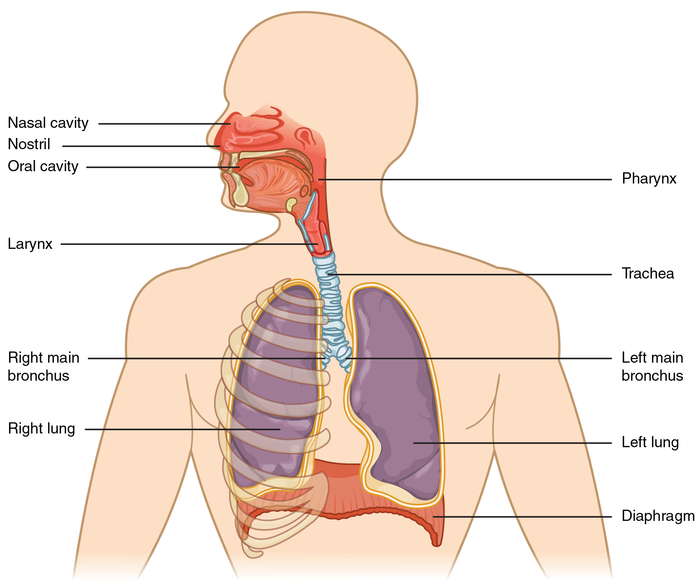
Functionally, the respiratory system can be divided into a conducting zone and a respiratory zone. Theconducting zoneof the respiratory system includes the organs and structures not directly involved in gas exchange. The gas exchange occurs in therespiratory zone.
The major functions of the conducting zone are to provide a route for incoming and outgoing air, remove debris and pathogens from the incoming air, and warm and humidify the incoming air. Several structures within the conducting zone perform other functions as well. The epithelium of the nasal passages, for example, is essential to sensing odors, and the bronchial epithelium that lines the lungs can metabolize some airborne carcinogens.
#### The Nose and its Adjacent Structures
The major entrance and exit for the respiratory system is through the nose. When discussing the nose, it is helpful to divide it into two major sections: the external nose, and the nasal cavity or internal nose.
Theexternal noseconsists of the surface and skeletal structures that result in the outward appearance of the nose and contribute to its numerous functions (Figure \(\PageIndex{2}\)). Therootis the region of the nose located between the eyebrows. Thebridgeis the part of the nose that connects the root to the rest of the nose. Thedorsum nasiis the length of the nose. Theapexis the tip of the nose. On either side of the apex, the nostrils are formed by the alae (singular = ala). Analais a cartilaginous structure that forms the lateral side of eachnaris(plural = nares), or nostril opening. Thephiltrumis the concave surface that connects the apex of the nose to the upper lip.
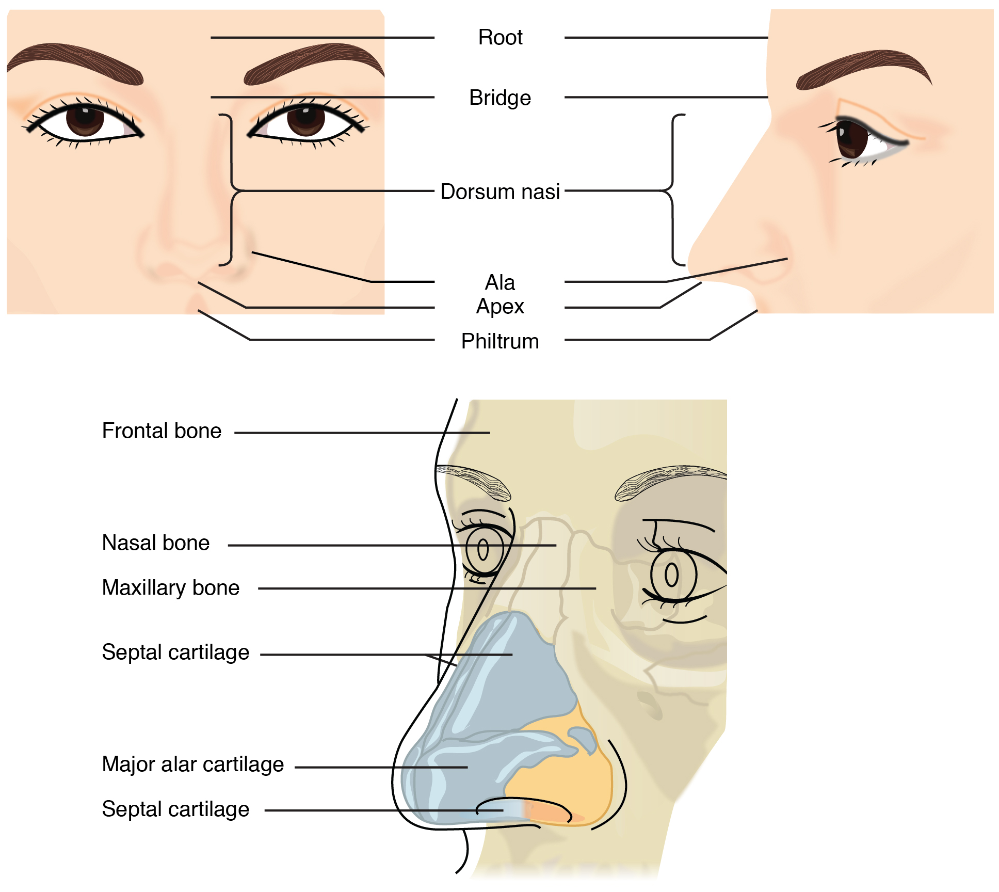
Underneath the thin skin of the nose are its skeletal features (see Figure \(\PageIndex{2}\), lower illustration). While the root and bridge of the nose consist of bone, the protruding portion of the nose is composed of cartilage. As a result, when looking at a skull, the nose is missing. Thenasal boneis one of a pair of bones that lies under the root and bridge of the nose. The nasal bone articulates superiorly with the frontal bone and laterally with the maxillary bones. Septal cartilage is flexible hyaline cartilage connected to the nasal bone, forming the dorsum nasi. Thealar cartilageconsists of the apex of the nose; it surrounds the naris.
The nares open into the nasal cavity, which is separated into left and right sections by the nasal septum (Figure \(\PageIndex{3}\)). Thenasal septumis formed anteriorly by a portion of the septal cartilage (the flexible portion you can touch with your fingers) and posteriorly by the perpendicular plate of the ethmoid bone (a cranial bone located just posterior to the nasal bones) and the thin vomer bones (whose name refers to its plough shape). Each lateral wall of the nasal cavity has three bony projections, called the superior, middle, and inferior nasal conchae. The inferior conchae are separate bones, whereas the superior and middle conchae are portions of the ethmoid bone. Conchae serve to increase the surface area of the nasal cavity and to disrupt the flow of air as it enters the nose, causing air to bounce along the epithelium, where it is cleaned and warmed. The conchae andmeatusesalso conserve water and prevent dehydration of the nasal epithelium by trapping water during exhalation. The floor of the nasal cavity is composed of the palate. The hard palate at the anterior region of the nasal cavity is composed of bone. The soft palate at the posterior portion of the nasal cavity consists of muscle tissue. Air exits the nasal cavities via the internal nares and moves into the pharynx.
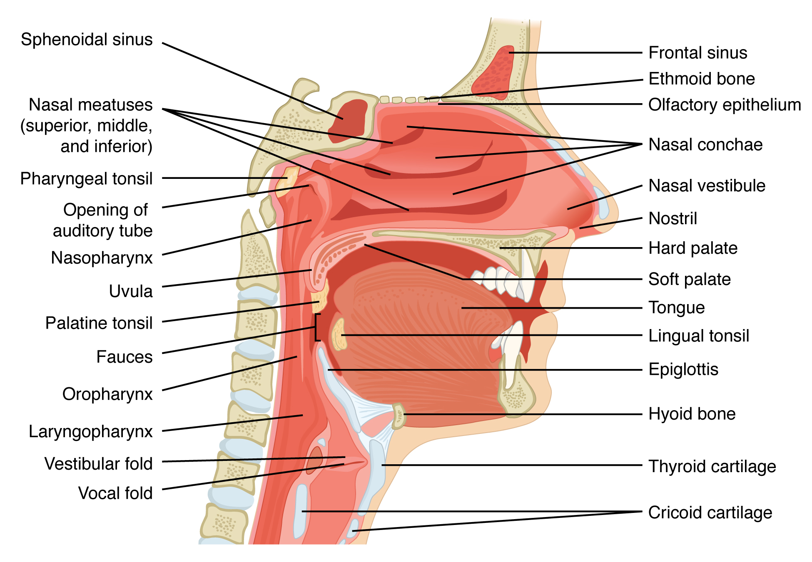
Several bones that help form the walls of the nasal cavity have air-containing spaces called the paranasal sinuses, which serve to warm and humidify incoming air. Sinuses are lined with a mucosa. Eachparanasal sinusis named for its associated bone: frontal sinus, maxillary sinus, sphenoidal sinus, and ethmoidal sinus. The sinuses produce mucus and lighten the weight of the skull.
The nares and anterior portion of the nasal cavities are lined with mucous membranes, containing sebaceous glands and hair follicles that serve to prevent the passage of large debris, such as dirt, through the nasal cavity. An olfactory epithelium used to detect odors is found deeper in the nasal cavity.
The conchae, meatuses, and paranasal sinuses are lined byrespiratory epitheliumcomposed of pseudostratified ciliated columnar epithelium (Figure \(\PageIndex{4}\)). The epithelium contains goblet cells, one of the specialized, columnar epithelial cells that produce mucus to trap debris. The cilia of the respiratory epithelium help remove the mucus and debris from the nasal cavity with a constant beating motion, sweeping materials towards the throat to be swallowed. Interestingly, cold air slows the movement of the cilia, resulting in accumulation of mucus that may in turn lead to a runny nose during cold weather. This moist epithelium functions to warm and humidify incoming air. Capillaries located just beneath the nasal epithelium warm the air by convection. Serous and mucus-producing cells also secrete the lysozyme enzyme and proteins called defensins, which have antibacterial properties. Immune cells that patrol the connective tissue deep to the respiratory epithelium provide additional protection.
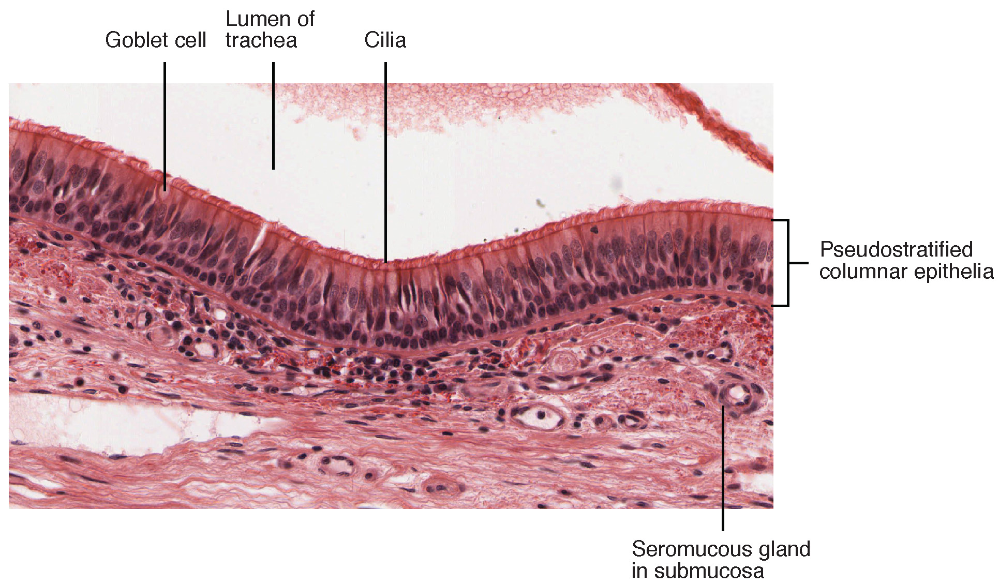
View theUniversity of Michigan WebScopeto explore the tissue sample in greater detail.
Thepharynxis a tube formed by skeletal muscle and lined by mucous membrane that is continuous with that of the nasal cavities (see Figure 22.4). The pharynx is divided into three major regions: the nasopharynx, the oropharynx, and the laryngopharynx (Figure \(\PageIndex{5}\)).
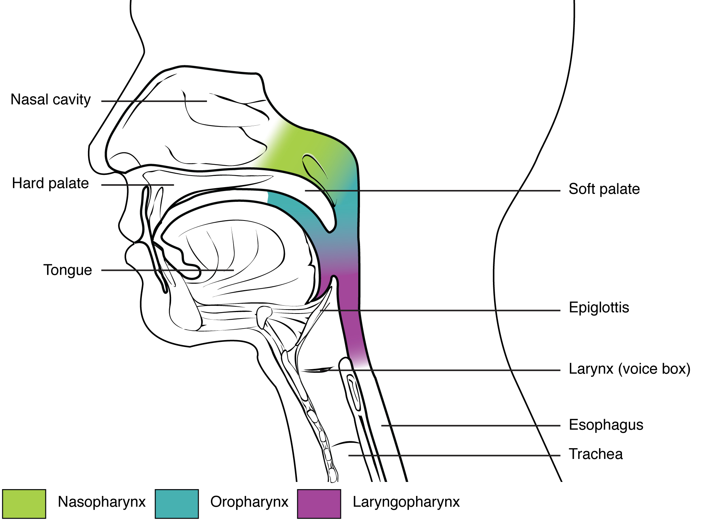
Thenasopharynxis flanked by the conchae of the nasal cavity, and it serves only as an airway. At the top of the nasopharynx are the pharyngeal tonsils. Apharyngeal tonsil, also called an adenoid, is an aggregate of lymphoid reticular tissue similar to a lymph node that lies at the superior portion of the nasopharynx. The function of the pharyngeal tonsil is not well understood, but it contains a rich supply of lymphocytes and is covered with ciliated epithelium that traps and destroys invading pathogens that enter during inhalation. The pharyngeal tonsils are large in children, but interestingly, tend to regress with age and may even disappear. The uvula is a small bulbous, teardrop-shaped structure located at the apex of the soft palate. Both the uvula and soft palate move like a pendulum during swallowing, swinging upward to close off the nasopharynx to prevent ingested materials from entering the nasal cavity. In addition, auditory (Eustachian) tubes that connect to each middle ear cavity open into the nasopharynx. This connection is why colds often lead to ear infections.
Theoropharynxis a passageway for both air and food. The oropharynx is bordered superiorly by the nasopharynx and anteriorly by the oral cavity. Thefaucesis the opening at the connection between the oral cavity and the oropharynx. As the nasopharynx becomes the oropharynx, the epithelium changes from pseudostratified ciliated columnar epithelium to stratified squamous epithelium. The oropharynx contains two distinct sets of tonsils, the palatine and lingual tonsils. Apalatine tonsilis one of a pair of structures located laterally in the oropharynx in the area of the fauces. Thelingual tonsilis located at the base of the tongue. Similar to the pharyngeal tonsil, the palatine and lingual tonsils are composed of lymphoid tissue, and trap and destroy pathogens entering the body through the oral or nasal cavities.
Thelaryngopharynxis inferior to the oropharynx and posterior to the larynx. It continues the route for ingested material and air until its inferior end, where the digestive and respiratory systems diverge. The stratified squamous epithelium of the oropharynx is continuous with the laryngopharynx. Anteriorly, the laryngopharynx opens into the larynx, whereas posteriorly, it enters the esophagus.
Thelarynxis a cartilaginous structure inferior to the laryngopharynx that connects the pharynx to the trachea and helps regulate the volume of air that enters and leaves the lungs (Figure \(\PageIndex{6}\)). The structure of the larynx is formed by several pieces of cartilage. Three large cartilage pieces—the thyroid cartilage (anterior), epiglottis (superior), and cricoid cartilage (inferior)—form the major structure of the larynx. Thethyroid cartilageis the largest piece of cartilage that makes up the larynx. The thyroid cartilage consists of thelaryngeal prominence, or “Adam’s apple,” which tends to be more prominent in males. The thickcricoid cartilageforms a ring, with a wide posterior region and a thinner anterior region. Three smaller, paired cartilages—the arytenoids, corniculates, and cuneiforms—attach to the epiglottis and the vocal cords and muscle that help move the vocal cords to produce speech.
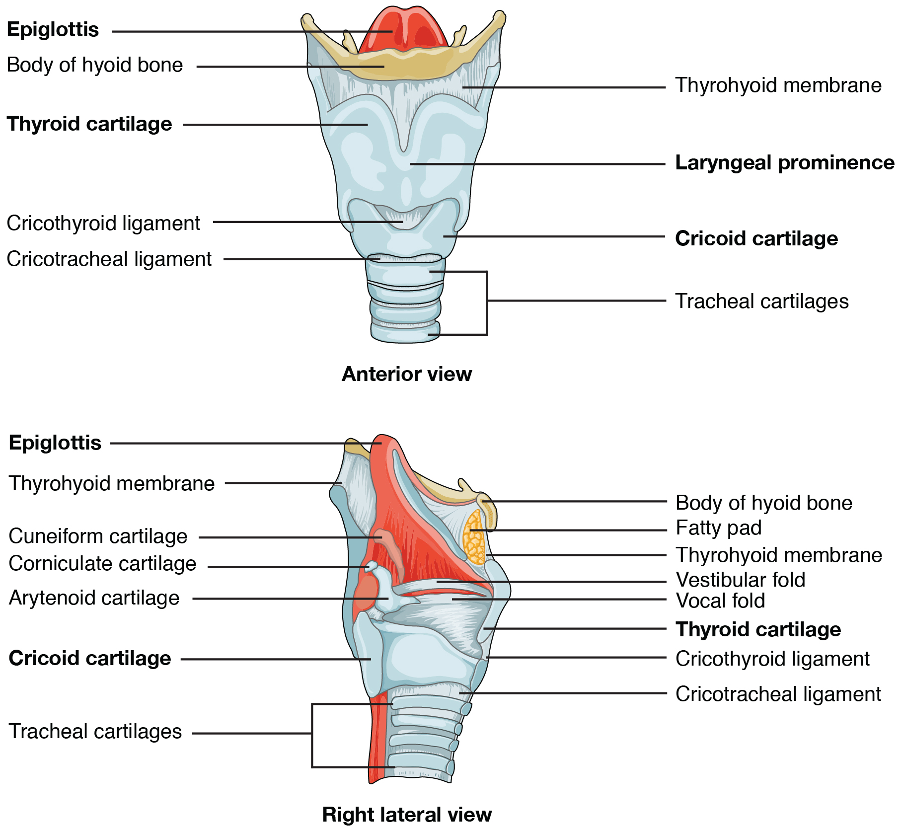
Theepiglottis, attached to the thyroid cartilage, is a very flexible piece of elastic cartilage that covers the opening of the trachea (see Figure \(\PageIndex{3}\)). When in the “closed” position, the unattached end of the epiglottis rests on the glottis. Theglottisis composed of the vestibular folds, the true vocal cords, and the space between these folds (Figure \(\PageIndex{7}\)). Avestibular fold, or false vocal cord, is one of a pair of folded sections of mucous membrane. Atrue vocal cordis one of the white, membranous folds attached by muscle to the thyroid and arytenoid cartilages of the larynx on their outer edges. The inner edges of the true vocal cords are free, allowing oscillation to produce sound. The size of the membranous folds of the true vocal cords differs between individuals, producing voices with different pitch ranges. Folds in males tend to be larger than those in females, which create a deeper voice. The act of swallowing causes the pharynx and larynx to lift upward, allowing the pharynx to expand and the epiglottis of the larynx to swing downward, closing the opening to the trachea. These movements produce a larger area for food to pass through, while preventing food and beverages from entering the trachea.
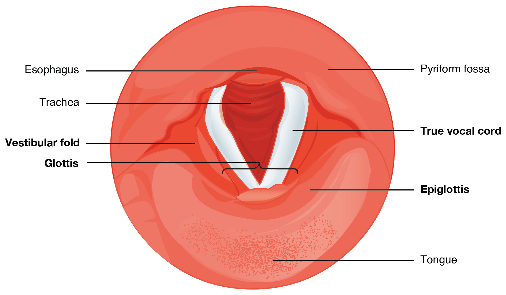
Continuous with the laryngopharynx, the superior portion of the larynx is lined with stratified squamous epithelium, transitioning into pseudostratified ciliated columnar epithelium that contains goblet cells. Similar to the nasal cavity and nasopharynx, this specialized epithelium produces mucus to trap debris and pathogens as they enter the trachea. The cilia beat the mucus upward towards the laryngopharynx, where it can be swallowed down the esophagus.
The trachea (windpipe) extends from the larynx toward the lungs (Figure \(\PageIndex{8}\)a). Thetracheais formed by 16 to 20 stacked, C-shaped pieces of hyaline cartilage that are connected by dense connective tissue. Thetrachealis muscleand elastic connective tissue together form thefibroelastic membrane, a flexible membrane that closes the posterior surface of the trachea, connecting the C-shaped cartilages. The fibroelastic membrane allows the trachea to stretch and expand slightly during inhalation and exhalation, whereas the rings of cartilage provide structural support and prevent the trachea from collapsing. In addition, the trachealis muscle can be contracted to force air through the trachea during exhalation. The trachea is lined with pseudostratified ciliated columnar epithelium, which is continuous with the larynx. The esophagus borders the trachea posteriorly.

The trachea branches into the right and left primarybronchiat the carina. These bronchi are also lined by pseudostratified ciliated columnar epithelium containing mucus-producing goblet cells (Figure \(\PageIndex{8}\)b). The carina is a raised structure that contains specialized nervous tissue that induces violent coughing if a foreign body, such as food, is present. Rings of cartilage, similar to those of the trachea, support the structure of the bronchi and prevent their collapse. The primary bronchi enter the lungs at the hilum, a concave region where blood vessels, lymphatic vessels, and nerves also enter the lungs. The bronchi continue to branch into a bronchial tree. Abronchial tree(or respiratory tree) is the collective term used for these multiple-branched bronchi. The main function of the bronchi, like other conducting zone structures, is to provide a passageway for air to move into and out of each lung. In addition, the mucous membrane traps debris and pathogens.
Abronchiolebranches from the tertiary bronchi. Bronchioles, which are about 1 mm in diameter, further branch until they become the tiny terminal bronchioles, which lead to the structures of gas exchange. There are more than 1000 terminal bronchioles in each lung. The muscular walls of the bronchioles do not contain cartilage like those of the bronchi. This muscular wall can change the size of the tubing to increase or decrease airflow through the tube.
In contrast to the conducting zone, the respiratory zone includes structures that are directly involved in gas exchange. The respiratory zone begins where the terminal bronchioles join arespiratory bronchiole, the smallest type of bronchiole (Figure \(\PageIndex{9}\)), which then leads to an alveolar duct, opening into a cluster of alveoli.
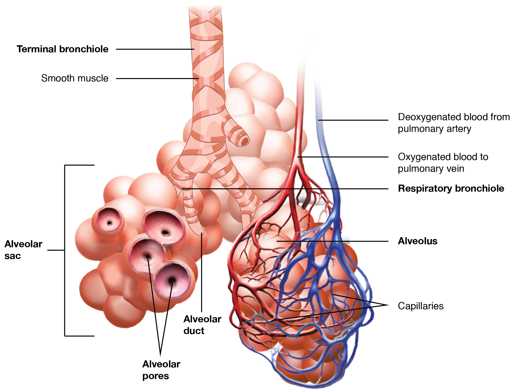
Analveolar ductis a tube composed of smooth muscle and connective tissue, which opens into a cluster of alveoli. Analveolusis one of the many small, grape-like sacs that are attached to the alveolar ducts.
Analveolar sacis a cluster of many individual alveoli that are responsible for gas exchange. An alveolus is approximately 200 μm in diameter with elastic walls that allow the alveolus to stretch during air intake, which greatly increases the surface area available for gas exchange. Alveoli are connected to their neighbors byalveolar pores, which help maintain equal air pressure throughout the alveoli and lung (Figure \(\PageIndex{10}\)).
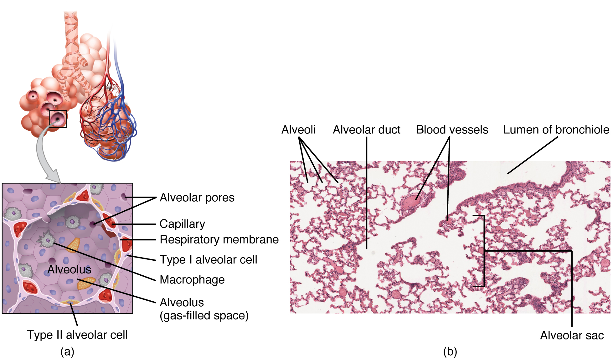
The alveolar wall consists of three major cell types: type I alveolar cells, type II alveolar cells, and alveolar macrophages. Atype I alveolar cellis a squamous epithelial cell of the alveoli, which constitute up to 97 percent of the alveolar surface area. These cells are about 25 nm thick and are highly permeable to gases. Atype II alveolar cellis interspersed among the type I cells and secretespulmonary surfactant, a substance composed of phospholipids and proteins that reduces the surface tension of the alveoli. Roaming around the alveolar wall is thealveolar macrophage, a phagocytic cell of the immune system that removes debris and pathogens that have reached the alveoli.
The simple squamous epithelium formed by type I alveolar cells is attached to a thin, elastic basement membrane. This epithelium is extremely thin and borders the endothelial membrane of capillaries. Taken together, the alveoli and capillary membranes form arespiratory membranethat is approximately 0.5 μm (micrometers) thick. The respiratory membrane allows gases to cross by simple diffusion, allowing oxygen to be picked up by the blood for transport and CO2to be released into the air of the alveoli.
#### Respiratory System: Asthma
Asthma is common condition that affects the lungs in both adults and children. Approximately 8.2 percent of adults (18.7 million) and 9.4 percent of children (7 million) in the United States suffer from asthma. In addition, asthma is the most frequent cause of hospitalization in children.
Asthma is a chronic disease characterized by inflammation and edema of the airway, and bronchospasms (that is, constriction of the bronchioles), which can inhibit air from entering the lungs. In addition, excessive mucus secretion can occur, which further contributes to airway occlusion (Figure \(\PageIndex{11}\)). Cells of the immune system, such as eosinophils and mononuclear cells, may also be involved in infiltrating the walls of the bronchi and bronchioles.
Bronchospasms occur periodically and lead to an “asthma attack.” An attack may be triggered by environmental factors such as dust, pollen, pet hair, or dander, changes in the weather, mold, tobacco smoke, and respiratory infections, or by exercise and stress.
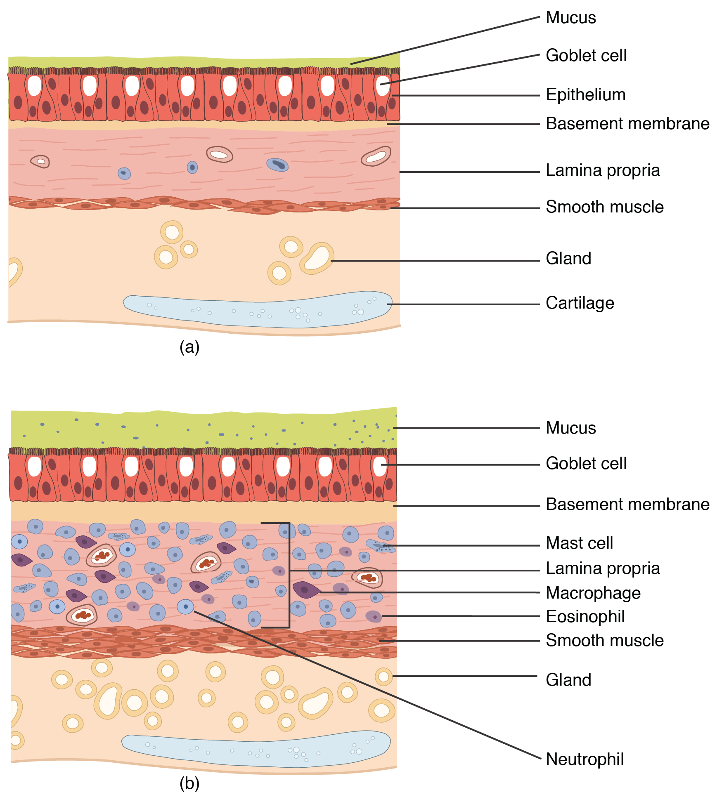
Symptoms of an asthma attack involve coughing, shortness of breath, wheezing, and tightness of the chest. Symptoms of a severe asthma attack that requires immediate medical attention would include difficulty breathing that results in blue (cyanotic) lips or face, confusion, drowsiness, a rapid pulse, sweating, and severe anxiety. The severity of the condition, frequency of attacks, and identified triggers influence the type of medication that an individual may require. Longer-term treatments are used for those with more severe asthma. Short-term, fast-acting drugs that are used to treat an asthma attack are typically administered via an inhaler. For young children or individuals who have difficulty using an inhaler, asthma medications can be administered via a nebulizer.
In many cases, the underlying cause of the condition is unknown. However, recent research has demonstrated that certain viruses, such as human rhinovirus C (HRVC), and the bacteriaMycoplasma pneumoniaeandChlamydia pneumoniaethat are contracted in infancy or early childhood, may contribute to the development of many cases of asthma.
Visit this site to learn more about what happens during an asthma attack. What are the three changes that occur inside the airways during an asthma attack?
📖 OpenStax Anatomy & Physiology 2e, Section 22.2. openstax.org · CC BY 4.0
- Describe the overall function of the lung
- Summarize the blood flow pattern associated with the lungs
- Outline the anatomy of the blood supply to the lungs
- Describe the pleura of the lungs and their function
A major organ of the respiratory system, eachlunghouses structures of both the conducting and respiratory zones. The main function of the lungs is to perform the exchange of oxygen and carbon dioxide with air from the atmosphere. To this end, the lungs exchange respiratory gases across a very large epithelial surface area—about 70 square meters—that is highly permeable to gases.
The lungs are pyramid-shaped, paired organs that are connected to the trachea by the right and left bronchi; on the inferior surface, the lungs are bordered by the diaphragm. The diaphragm is a dome-shaped muscle located at the base of the lungs and thoracic cavity. The lungs are enclosed by the pleurae, which are attached to the mediastinum. The right lung is shorter and wider than the left lung, and the left lung occupies a smaller volume than the right. Thecardiac notchis an indentation on the surface of the left lung, and it allows space for the heart (Figure \(\PageIndex{1}\)). The apex of the lung is the superior region, whereas the base is the opposite region near the diaphragm. The costal surface of the lung borders the ribs. The mediastinal surface faces the midline.

Each lung is composed of smaller units called lobes. Fissures separate these lobes from each other. The right lung consists of three lobes: the superior, middle, and inferior lobes. The left lung consists of two lobes: the superior and inferior lobes. A bronchopulmonary segment is a division of a lobe, and each lobe houses multiple bronchopulmonary segments. Each segment receives air from its own tertiary bronchus and is supplied with blood by its own artery. Some diseases of the lungs typically affect one or more bronchopulmonary segments, and in some cases, the diseased segments can be surgically removed with little influence on neighboring segments. A pulmonary lobule is a subdivision formed as the bronchi branch into bronchioles. Each lobule receives its own large bronchiole that has multiple branches. An interlobular septum is a wall, composed of connective tissue, which separates lobules from one another.
The blood supply of the lungs plays an important role in gas exchange and serves as a transport system for gases throughout the body. In addition, innervation by the both the parasympathetic and sympathetic nervous systems provides an important level of control through dilation and constriction of the airway.
The major function of the lungs is to perform gas exchange, which requires blood from the pulmonary circulation. This blood supply contains deoxygenated blood and travels to the lungs where erythrocytes, also known as red blood cells, pick up oxygen to be transported to tissues throughout the body. Thepulmonary arteryis an artery that arises from the pulmonary trunk and carries deoxygenated, arterial blood to the alveoli. The pulmonary artery branches multiple times as it follows the bronchi, and each branch becomes progressively smaller in diameter. One arteriole and an accompanying venule supply and drain one pulmonary lobule. As they near the alveoli, the pulmonary arteries become the pulmonary capillary network. The pulmonary capillary network consists of tiny vessels with very thin walls that lack smooth muscle fibers. The capillaries branch and follow the bronchioles and structure of the alveoli. It is at this point that the capillary wall meets the alveolar wall, creating the respiratory membrane. Once the blood is oxygenated, it drains from the alveoli by way of multiple pulmonary veins, which exit the lungs through thehilum.
#### Nervous Innervation
Dilation and constriction of the airway are achieved through nervous control by the parasympathetic and sympathetic nervous systems. The parasympathetic system causesbronchoconstriction, whereas the sympathetic nervous system stimulatesbronchodilation. Reflexes such as coughing, and the ability of the lungs to regulate oxygen and carbon dioxide levels, also result from this autonomic nervous system control. Sensory nerve fibers arise from the vagus nerve, and from the second to fifth thoracic ganglia. Thepulmonary plexusis a region on the lung root formed by the entrance of the nerves at the hilum. The nerves then follow the bronchi in the lungs and branch to innervate muscle fibers, glands, and blood vessels.
Each lung is enclosed within a cavity that is surrounded by the pleura. The pleura (plural = pleurae) is a serous membrane that surrounds the lung. The right and left pleurae, which enclose the right and left lungs, respectively, are separated by the mediastinum. The pleurae consist of two layers. Thevisceral pleurais the layer that is superficial to the lungs, and extends into and lines the lung fissures (Figure \(\PageIndex{2}\)). In contrast, theparietal pleurais the outer layer that connects to the thoracic wall, the mediastinum, and the diaphragm. The visceral and parietal pleurae connect to each other at the hilum. Thepleural cavityis the space between the visceral and parietal layers.
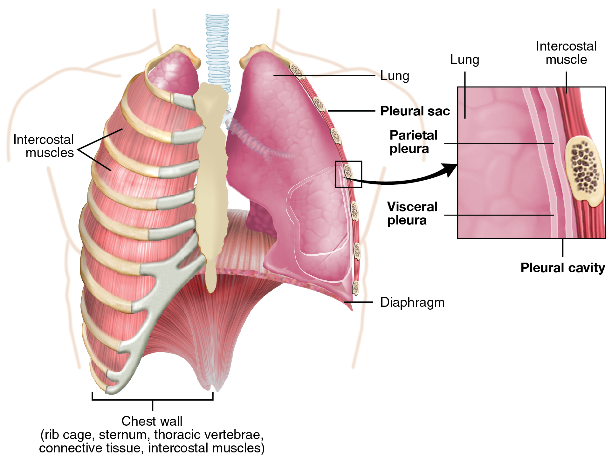
The pleurae perform two major functions: They produce pleural fluid and create cavities that separate the major organs.Pleural fluidis secreted by mesothelial cells from both pleural layers and acts to lubricate their surfaces. This lubrication reduces friction between the two layers to prevent trauma during breathing, and creates surface tension that helps maintain the position of the lungs against the thoracic wall. This adhesive characteristic of the pleural fluid causes the lungs to enlarge when the thoracic wall expands during ventilation, allowing the lungs to fill with air. The pleurae also create a division between major organs that prevents interference due to the movement of the organs, while preventing the spread of infection.
#### The Effects of Second-Hand Tobacco Smoke
The burning of a tobacco cigarette creates multiple chemical compounds that are released through mainstream smoke, which is inhaled by the smoker, and through sidestream smoke, which is the smoke that is given off by the burning cigarette. Second-hand smoke, which is a combination of sidestream smoke and the mainstream smoke that is exhaled by the smoker, has been demonstrated by numerous scientific studies to cause disease. At least 40 chemicals in sidestream smoke have been identified that negatively impact human health, leading to the development of cancer or other conditions, such as immune system dysfunction, liver toxicity, cardiac arrhythmias, pulmonary edema, and neurological dysfunction. Furthermore, second-hand smoke has been found to harbor at least 250 compounds that are known to be toxic, carcinogenic, or both. Some major classes of carcinogens in second-hand smoke are polyaromatic hydrocarbons (PAHs), N-nitrosamines, aromatic amines, formaldehyde, and acetaldehyde.
Tobacco and second-hand smoke are considered to be carcinogenic. Exposure to second-hand smoke can cause lung cancer in individuals who are not tobacco users themselves. It is estimated that the risk of developing lung cancer is increased by up to 30 percent in nonsmokers who live with an individual who smokes in the house, as compared to nonsmokers who are not regularly exposed to second-hand smoke. Children are especially affected by second-hand smoke. Children who live with an individual who smokes inside the home have a larger number of lower respiratory infections, which are associated with hospitalizations, and higher risk of sudden infant death syndrome (SIDS). Second-hand smoke in the home has also been linked to a greater number of ear infections in children, as well as worsening symptoms of asthma.
📖 OpenStax Anatomy & Physiology 2e, Section 22.3. openstax.org · CC BY 4.0
- Describe the mechanisms that drive breathing
- Discuss how pressure, volume, and resistance are related
- List the steps involved in pulmonary ventilation
- Discuss the physical factors related to breathing
- Discuss the meaning of respiratory volume and capacities
- Define respiratory rate
- Outline the mechanisms behind the control of breathing
- Describe the respiratory centers of the medulla oblongata
- Describe the respiratory centers of the pons
- Discuss factors that can influence the respiratory rate
Pulmonary ventilationis the act of breathing, which can be described as the movement of air into and out of the lungs. The major mechanisms that drive pulmonary ventilation are atmospheric pressure (Patm); the air pressure within the alveoli, called intra-alveolar pressure (Palv); and the pressure within the pleural cavity, called intrapleural pressure (Pip).
The intra-alveolar and intrapleural pressures are dependent on certain physical features of the lung. However, the ability to breathe—to have air enter the lungs during inspiration and air leave the lungs during expiration—is dependent on the air pressure of the atmosphere and the air pressure within the lungs.
#### Pressure Relationships
Inspiration (or inhalation) and expiration (or exhalation) are dependent on the differences in pressure between the atmosphere and the lungs. In a gas, pressure is a force created by the movement of gas molecules that are confined. For example, a certain number of gas molecules in a two-liter container has more room than the same number of gas molecules in a one-liter container (Figure \(\PageIndex{1}\)). In this case, the force exerted by the movement of the gas molecules against the walls of the two-liter container is lower than the force exerted by the gas molecules in the one-liter container. Therefore, the pressure is lower in the two-liter container and higher in the one-liter container. At a constant temperature, changing the volume occupied by the gas changes the pressure, as does changing the number of gas molecules.Boyle’s lawdescribes the relationship between volume and pressure in a gas at a constant temperature. Boyle discovered that the pressure of a gas is inversely proportional to its volume: If volume increases, pressure decreases. Likewise, if volume decreases, pressure increases. Pressure and volume are inversely related (P= k/V). Therefore, the pressure in the one-liter container (one-half the volume of the two-liter container) would be twice the pressure in the two-liter container. Boyle’s law is expressed by the following formula:
\[P_{1}V_{1} = [P_{2}V_{2}\]P1V1=P2V2
In this formula,P1represents the initial pressure andV1represents the initial volume, whereas the final pressure and volume are represented byP2andV2,respectively. If the two- and one-liter containers were connected by a tube and the volume of one of the containers were changed, then the gases would move from higher pressure (lower volume) to lower pressure (higher volume).
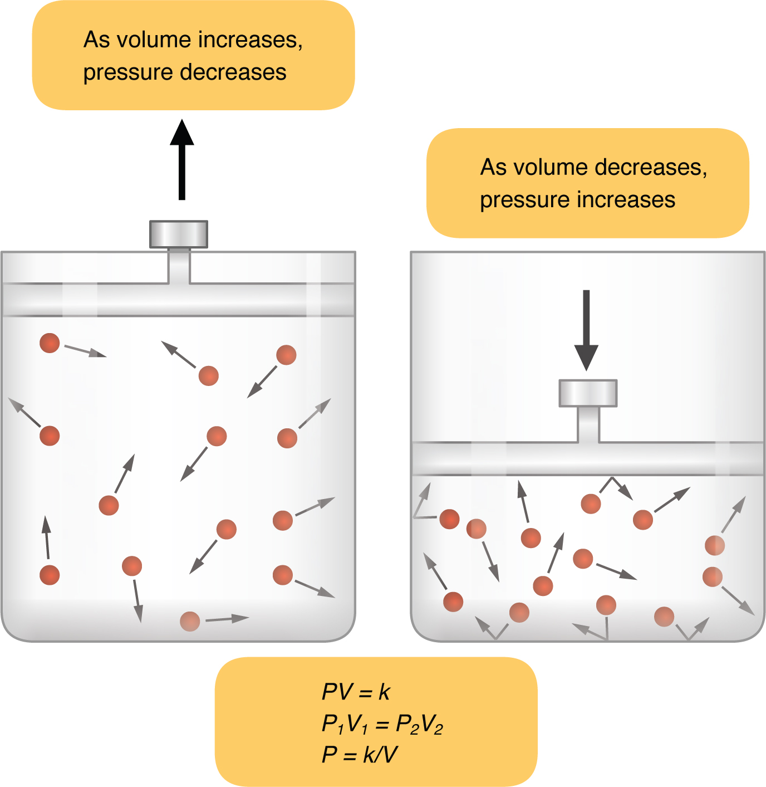
Pulmonary ventilation is dependent on three types of pressure: atmospheric, intra-alveolar, and intrapleural.Atmospheric pressureis the amount of force that is exerted by gases in the air surrounding any given surface, such as the body. Atmospheric pressure can be expressed in terms of the unit atmosphere, abbreviated atm, or in millimeters of mercury (mm Hg). One atm is equal to 760 mm Hg, which is the atmospheric pressure at sea level. Typically, for respiration, other pressure values are discussed in relation to atmospheric pressure. Therefore, negative pressure is pressure lower than the atmospheric pressure, whereas positive pressure is pressure that it is greater than the atmospheric pressure. A pressure that is equal to the atmospheric pressure is expressed as zero.
Intra-alveolar pressure(intrapulmonary pressure) is the pressure of the air within the alveoli, which changes during the different phases of breathing (Figure \(\PageIndex{2}\)). Because the alveoli are connected to the atmosphere via the tubing of the airways (similar to the two- and one-liter containers in the example above), the intrapulmonary pressure of the alveoli always equalizes with the atmospheric pressure.
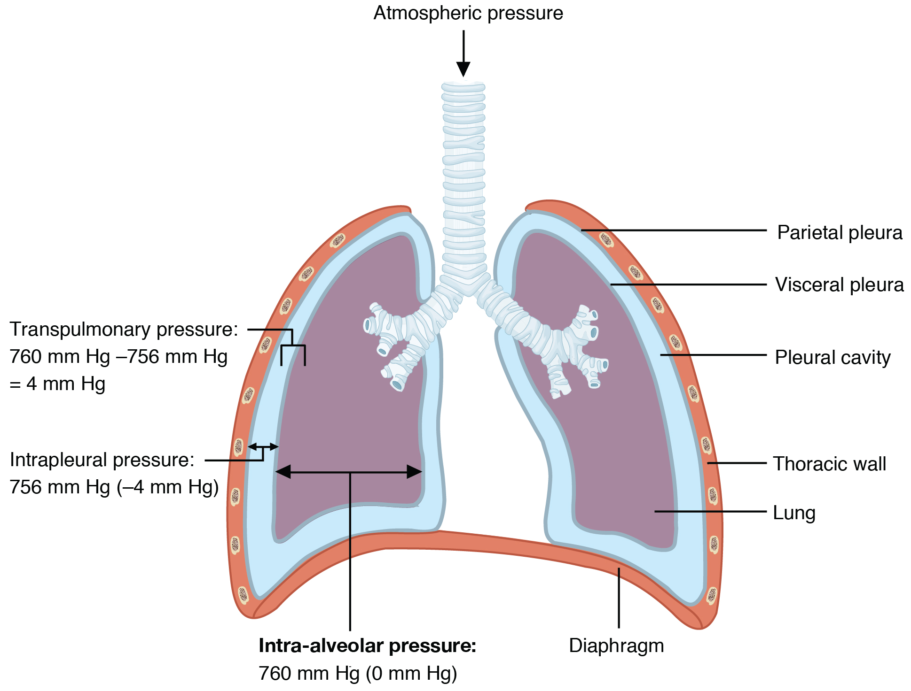
Intrapleural pressureis the pressure of the air within the pleural cavity, between the visceral and parietal pleurae. Similar to intra-alveolar pressure, intrapleural pressure also changes during the different phases of breathing. However, due to certain characteristics of the lungs, the intrapleural pressure is always lower than, or negative to, the intra-alveolar pressure (and therefore also to atmospheric pressure). Although it fluctuates during inspiration and expiration, intrapleural pressure remains approximately –4 mm Hg throughout the breathing cycle.
Competing forces within the thorax cause the formation of the negative intrapleural pressure. One of these forces relates to the elasticity of the lungs themselves—elastic tissue pulls the lungs inward, away from the thoracic wall. Surface tension of alveolar fluid, which is mostly water, also creates an inward pull of the lung tissue. This inward tension from the lungs is countered by opposing forces from the pleural fluid and thoracic wall. Surface tension within the pleural cavity pulls the lungs outward. Too much or too little pleural fluid would hinder the creation of the negative intrapleural pressure; therefore, the level must be closely monitored by the mesothelial cells and drained by the lymphatic system. Since the parietal pleura is attached to the thoracic wall, the natural elasticity of the chest wall opposes the inward pull of the lungs. Ultimately, the outward pull is slightly greater than the inward pull, creating the –4 mm Hg intrapleural pressure relative to the intra-alveolar pressure.Transpulmonary pressureis the difference between the intrapleural and intra-alveolar pressures, and it determines the size of the lungs. A higher transpulmonary pressure corresponds to a larger lung.
#### Physical Factors Affecting Ventilation
In addition to the differences in pressures, breathing is also dependent upon the contraction and relaxation of muscle fibers of both the diaphragm and thorax. The lungs themselves are passive during breathing, meaning they are not involved in creating the movement that helps inspiration and expiration. This is because of the adhesive nature of the pleural fluid, which allows the lungs to be pulled outward when the thoracic wall moves during inspiration. The recoil of the thoracic wall during expiration causes compression of the lungs. Contraction and relaxation of the diaphragm and intercostals muscles (found between the ribs) cause most of the pressure changes that result in inspiration and expiration. These muscle movements and subsequent pressure changes cause air to either rush in or be forced out of the lungs.
Other characteristics of the lungs influence the effort that must be expended to ventilate. Resistance is a force that slows motion, in this case, the flow of gases. The size of the airway is the primary factor affecting resistance. A small tubular diameter forces air through a smaller space, causing more collisions of air molecules with the walls of the airways. The following formula helps to describe the relationship between airway resistance and pressure changes:
As noted earlier, there is surface tension within the alveoli caused by water present in the lining of the alveoli. This surface tension tends to inhibit expansion of the alveoli. However, pulmonary surfactant secreted by type II alveolar cells mixes with that water and helps reduce this surface tension. Without pulmonary surfactant, the alveoli would collapse during expiration.
Thoracic wall complianceis the ability of the thoracic wall to stretch while under pressure. This can also affect the effort expended in the process of breathing. In order for inspiration to occur, the thoracic cavity must expand. The expansion of the thoracic cavity directly influences the capacity of the lungs to expand. If the tissues of the thoracic wall are not very compliant, it will be difficult to expand the thorax to increase the size of the lungs.
The difference in pressures drives pulmonary ventilation because air flows down a pressure gradient, that is, air flows from an area of higher pressure to an area of lower pressure. Air flows into the lungs largely due to a difference in pressure; atmospheric pressure is greater than intra-alveolar pressure, and intra-alveolar pressure is greater than intrapleural pressure. Air flows out of the lungs during expiration based on the same principle; pressure within the lungs becomes greater than the atmospheric pressure.
Pulmonary ventilation comprises two major steps: inspiration and expiration.Inspirationis the process that causes air to enter the lungs, andexpirationis the process that causes air to leave the lungs (Figure \(\PageIndex{3}\)). Arespiratory cycleis one sequence of inspiration and expiration. In general, two muscle groups are used during normal inspiration: the diaphragm and the external intercostal muscles. Additional muscles can be used if a bigger breath is required. When the diaphragm contracts, it moves inferiorly toward the abdominal cavity, creating a larger thoracic cavity and more space for the lungs. Contraction of the external intercostal muscles moves the ribs upward and outward, causing the rib cage to expand, which increases the volume of the thoracic cavity. Due to the adhesive force of the pleural fluid, the expansion of the thoracic cavity forces the lungs to stretch and expand as well. This increase in volume leads to a decrease in intra-alveolar pressure, creating a pressure lower than atmospheric pressure. As a result, a pressure gradient is created that drives air into the lungs.
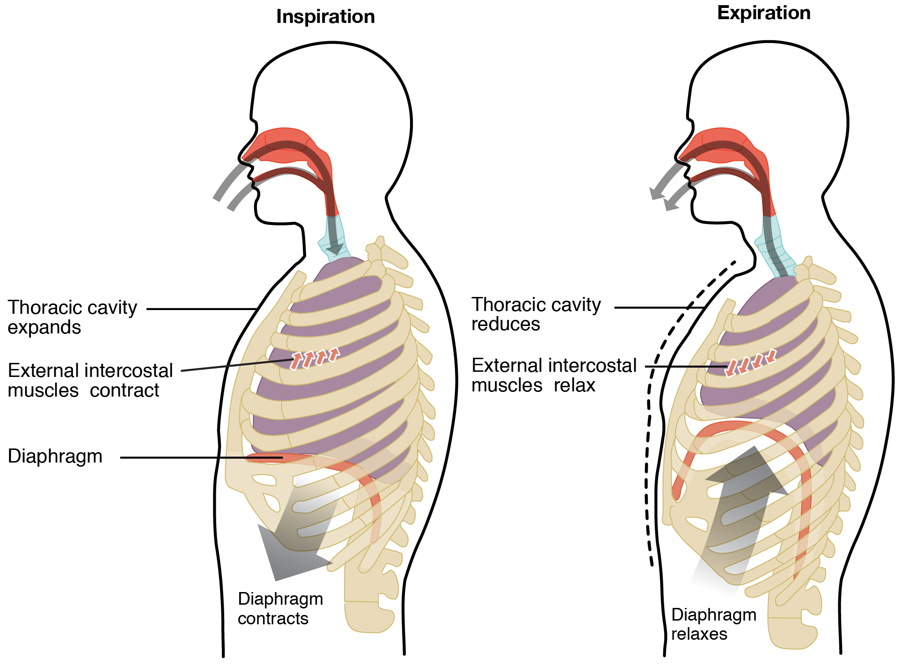
The process of normal expiration is passive, meaning that energy is not required to push air out of the lungs. Instead, the elasticity of the lung tissue causes the lung to recoil, as the diaphragm and intercostal muscles relax following inspiration. In turn, the thoracic cavity and lungs decrease in volume, causing an increase in intrapulmonary pressure. The intrapulmonary pressure rises above atmospheric pressure, creating a pressure gradient that causes air to leave the lungs.
There are different types, or modes, of breathing that require a slightly different process to allow inspiration and expiration.Quiet breathing, also known as eupnea, is a mode of breathing that occurs at rest and does not require the cognitive thought of the individual. During quiet breathing, the diaphragm and external intercostals must contract.
A deep breath, called diaphragmatic breathing, requires the diaphragm to contract. As the diaphragm relaxes, air passively leaves the lungs. A shallow breath, called costal breathing, requires contraction of the intercostal muscles. As the intercostal muscles relax, air passively leaves the lungs.
In contrast,forced breathing, also known as hyperpnea, is a mode of breathing that can occur during exercise or actions that require the active manipulation of breathing, such as singing. During forced breathing, inspiration and expiration both occur due to muscle contractions. In addition to the contraction of the diaphragm and intercostal muscles, other accessory muscles must also contract. During forced inspiration, muscles of the neck, including the scalenes, contract and lift the thoracic wall, increasing lung volume. During forced expiration, accessory muscles of the abdomen, including the obliques, contract, forcing abdominal organs upward against the diaphragm. This helps to push the diaphragm further into the thorax, pushing more air out. In addition, accessory muscles (primarily the internal intercostals) help to compress the rib cage, which also reduces the volume of the thoracic cavity.
Respiratory volumeis the term used for various volumes of air moved by or associated with the lungs at a given point in the respiratory cycle. There are four major types of respiratory volumes: tidal, residual, inspiratory reserve, and expiratory reserve (Figure \(\PageIndex{4}\)).Tidal volume (TV)is the amount of air that normally enters the lungs during quiet breathing, which is about 500 milliliters.Expiratory reserve volume (ERV)is the amount of air you can forcefully exhale past a normal tidal expiration, up to 1200 milliliters for males.Inspiratory reserve volume (IRV)is produced by a deep inhalation, past a tidal inspiration. This is the extra volume that can be brought into the lungs during a forced inspiration.Residual volume (RV)is the air left in the lungs if you exhale as much air as possible. The residual volume makes breathing easier by preventing the alveoli from collapsing. Respiratory volume is dependent on a variety of factors, and measuring the different types of respiratory volumes can provide important clues about a person’s respiratory health (Figure \(\PageIndex{5}\)).
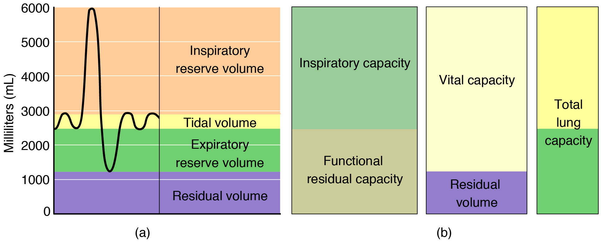
![This tables describes methods of pulmonary function testing. Spirometry tests require a spirometer. These tests can measure forced vital capacity (FVC), the volume of air that is exhaled after maximum inhalation; foreced expiratory volume (FEV), the volume of air exhaled in one breath; forced expiratory flow, 25 to 75 percent, the air flow in the middle of exhalation; peak expiratory flow (PEF), the rate of exhalation; maximum voluntary ventilation (MVV), the volume of air that can be inspired and expired in 1 minute; slow vital capacity (SVC), the volume of air that can be slowly exhaled after inhaling past the tidal volume; total lung capacity (TLC), the volume of air in the lungs after maximum inhalation; functional residual capacity (FRC), the volume of air left in the lungs after normal expiration; residual volume (RV), the volume of air in the lungs after maximum exhalation; total lung capacity (TLC), the maximum volume of air that the lungs can hold; and expiratory reserve volume (ERV), the volume of air that can be exhaled beyond normal exhalation. Gas diffusion tests require a blood gas analyzer. These tests can measure arterial blood gases, the concentration of oxygen and carbon dioxide in the blood.](images/ch22/fig22-19-this-tables-describes-methods-of-pulmona.jpg)
Respiratory capacity is the combination of two or more selected volumes, which further describes the amount of air in the lungs during a given time. For example,total lung capacity (TLC)is the sum of all of the lung volumes (TV, ERV, IRV, and RV), which represents the total amount of air a person can hold in the lungs after a forceful inhalation. TLC is about 6000 mL air for males, and about 4200 mL for females.Vital capacity (VC)is the amount of air a person can move into or out of their lungs, and is the sum of all of the volumes except residual volume (TV, ERV, and IRV), which is between 4000 and 5000 milliliters.Inspiratory capacity (IC)is the maximum amount of air that can be inhaled past a normal tidal expiration, is the sum of the tidal volume and inspiratory reserve volume. On the other hand, thefunctional residual capacity (FRC)is the amount of air that remains in the lung after a normal tidal expiration; it is the sum of expiratory reserve volume and residual volume (see Figure 22.18).
Watch this video to learn more about lung volumes and spirometers. Explain how spirometry test results can be used to diagnose respiratory diseases or determine the effectiveness of disease treatment.
In addition to the air that creates respiratory volumes, the respiratory system also containsanatomical dead space, which is air that is present in the airway that never reaches the alveoli and therefore never participates in gas exchange.Alveolar dead spaceinvolves air found within alveoli that are unable to function, such as those affected by disease or abnormal blood flow.Total dead spaceis the anatomical dead space and alveolar dead space together, and represents all of the air in the respiratory system that is not being used in the gas exchange process.
Breathing usually occurs without thought, although at times you can consciously control it, such as when you swim under water, sing a song, or blow bubbles. Therespiratory rateis the total number of breaths, or respiratory cycles, that occur each minute. Respiratory rate can be an important indicator of disease, as the rate may increase or decrease during an illness or in a disease condition. The respiratory rate is controlled by the respiratory center located within the medulla oblongata in the brain, which responds primarily to changes in carbon dioxide, oxygen, and pH levels in the blood.
The normal respiratory rate of a child decreases from birth to adolescence. A child under 1 year of age has a normal respiratory rate between 30 and 60 breaths per minute, but by the time a child is about 10 years old, the normal rate is closer to 18 to 30. By adolescence, the normal respiratory rate is similar to that of adults, 12 to 18 breaths per minute.
#### Ventilation Control Centers
The control of ventilation is a complex interplay of multiple regions in the brain that signal the muscles used in pulmonary ventilation to contract (Table \(\PageIndex{1}\)). The result is typically a rhythmic, consistent ventilation rate that provides the body with sufficient amounts of oxygen, while adequately removing carbon dioxide.
| System component | Function |
|---|---|
| Medullary respiratory center | Sets the basic rhythm of breathing |
| Ventral respiratory group (VRG) | Generates the breathing rhythm and integrates data coming into the medulla |
| Dorsal respiratory group (DRG) | Integrates input from the stretch receptors and the chemoreceptors in the periphery |
| Pontine respiratory group (PRG) | Influences and modifies the medulla oblongata’s functions |
| Aortic body | Monitors blood PCO2, PO2, and pH |
| Carotid body | Monitors blood PCO2, PO2, and pH |
| Hypothalamus | Monitors emotional state and body temperature |
| Cortical areas of the brain | Control voluntary breathing |
| Proprioceptors | Send impulses regarding joint and muscle movements |
| Pulmonary irritant reflexes | Protect the respiratory zones of the system from foreign material |
| Inflation reflex | Protects the lungs from over-inflating |
Neurons that innervate the muscles of the respiratory system are responsible for controlling and regulating pulmonary ventilation. The major brain centers involved in pulmonary ventilation are the medulla oblongata and the pontine respiratory group (Figure \(\PageIndex{6}\)).

The medulla oblongata contains thedorsal respiratory group (DRG)and theventral respiratory group (VRG). The DRG is involved in maintaining a constant breathing rhythm by stimulating the diaphragm and intercostal muscles to contract, resulting in inspiration. When activity in the DRG ceases, it no longer stimulates the diaphragm and intercostals to contract, allowing them to relax, resulting in expiration. The VRG is involved in forced breathing, as the neurons in the VRG stimulate the accessory muscles involved in forced breathing to contract, resulting in forced inspiration. The VRG also stimulates the accessory muscles involved in forced expiration to contract.
The second respiratory center of the brain is located within the pons, called the pontine respiratory group, and consists of the apneustic and pneumotaxic centers. Theapneustic centeris a double cluster of neuronal cell bodies that stimulate neurons in the DRG, controlling the depth of inspiration, particularly for deep breathing. Thepneumotaxic centeris a network of neurons that inhibits the activity of neurons in the DRG, allowing relaxation after inspiration, and thus controlling the overall rate.
#### Factors That Affect the Rate and Depth of Respiration
The respiratory rate and the depth of inspiration are regulated by the medulla oblongata and pons; however, these regions of the brain do so in response to systemic stimuli. It is a dose-response, negative-feedback relationship in which the greater the stimulus, the greater the response. Thus, increasing stimuli results in forced breathing. Multiple systemic factors are involved in stimulating the brain to produce pulmonary ventilation.
The major factor that stimulates the medulla oblongata and pons to produce respiration is surprisingly not oxygen concentration, but rather the concentration of carbon dioxide in the blood. As you recall, carbon dioxide is a waste product of cellular respiration and can be toxic. Concentrations of chemicals are sensed by chemoreceptors. Acentral chemoreceptoris one of the specialized receptors that are located in the brain and brainstem, whereas aperipheral chemoreceptoris one of the specialized receptors located in the carotid arteries and aortic arch. Concentration changes in certain substances, such as carbon dioxide or hydrogen ions, stimulate these receptors, which in turn signal the respiration centers of the brain. In the case of carbon dioxide, as the concentration of CO2in the blood increases, it readily diffuses across the blood-brain barrier, where it collects in the extracellular fluid. As will be explained in more detail later, increased carbon dioxide levels lead to increased levels of hydrogen ions, decreasing pH. The increase in hydrogen ions in the brain triggers the central chemoreceptors to stimulate the respiratory centers to initiate contraction of the diaphragm and intercostal muscles. As a result, the rate and depth of respiration increase, allowing more carbon dioxide to be expelled, which brings more air into and out of the lungs promoting a reduction in the blood levels of carbon dioxide, and therefore hydrogen ions, in the blood. In contrast, low levels of carbon dioxide in the blood cause low levels of hydrogen ions in the brain, leading to a decrease in the rate and depth of pulmonary ventilation, producing shallow, slow breathing.
Another factor involved in influencing the respiratory activity of the brain is systemic arterial concentrations of hydrogen ions. Increasing carbon dioxide levels can lead to increased H+levels, as mentioned above, as well as other metabolic activities, such as lactic acid accumulation after strenuous exercise. Peripheral chemoreceptors of the aortic arch and carotid arteries sense arterial levels of hydrogen ions. When peripheral chemoreceptors sense decreasing, or more acidic, pH levels, they stimulate an increase in ventilation to remove carbon dioxide from the blood at a quicker rate. Removal of carbon dioxide from the blood helps to reduce hydrogen ions, thus increasing systemic pH.
Blood levels of oxygen are also important in influencing respiratory rate. The peripheral chemoreceptors are responsible for sensing large changes in blood oxygen levels. If blood oxygen levels become quite low—about 60 mm Hg or less—then peripheral chemoreceptors stimulate an increase in respiratory activity. The chemoreceptors are only able to sense dissolved oxygen molecules, not the oxygen that is bound to hemoglobin. As you recall, the majority of oxygen is bound by hemoglobin; when dissolved levels of oxygen drop, hemoglobin releases oxygen. Therefore, a large drop in oxygen levels is required to stimulate the chemoreceptors of the aortic arch and carotid arteries.
The hypothalamus and other brain regions associated with the limbic system also play roles in influencing the regulation of breathing by interacting with the respiratory centers. The hypothalamus and other regions associated with the limbic system are involved in regulating respiration in response to emotions, pain, and temperature. For example, an increase in body temperature causes an increase in respiratory rate. Feeling excited or the fight-or-flight response will also result in an increase in respiratory rate.
#### Respiratory System: Sleep Apnea
Sleep apnea is a chronic disorder that can occur in children or adults, and is characterized by the cessation of breathing during sleep. These episodes may last for several seconds or several minutes, and may differ in the frequency with which they are experienced. Sleep apnea leads to poor sleep, which is reflected in the symptoms of fatigue, evening napping, irritability, memory problems, and morning headaches. In addition, many individuals with sleep apnea experience a dry throat in the morning after waking from sleep, which may be due to excessive snoring.
There are two types of sleep apnea: obstructive sleep apnea and central sleep apnea. Obstructive sleep apnea is caused by an obstruction of the airway during sleep, which can occur at different points in the airway, depending on the underlying cause of the obstruction. For example, the tongue and throat muscles of some individuals with obstructive sleep apnea may relax excessively, causing the muscles to push into the airway. Another example is obesity, which is a known risk factor for sleep apnea, as excess adipose tissue in the neck region can push the soft tissues towards the lumen of the airway, causing the trachea to narrow.
In central sleep apnea, the respiratory centers of the brain do not respond properly to rising carbon dioxide levels and therefore do not stimulate the contraction of the diaphragm and intercostal muscles regularly. As a result, inspiration does not occur and breathing stops for a short period. In some cases, the cause of central sleep apnea is unknown. However, some medical conditions, such as stroke and congestive heart failure, may cause damage to the pons or medulla oblongata. In addition, some pharmacologic agents, such as morphine, can affect the respiratory centers, causing a decrease in the respiratory rate. The symptoms of central sleep apnea are similar to those of obstructive sleep apnea.
A diagnosis of sleep apnea is usually done during a sleep study, where the patient is monitored in a sleep laboratory for several nights. The patient’s blood oxygen levels, heart rate, respiratory rate, and blood pressure are monitored, as are brain activity and the volume of air that is inhaled and exhaled. Treatment of sleep apnea commonly includes the use of a device called a continuous positive airway pressure (CPAP) machine during sleep. The CPAP machine has a mask that covers the nose, or the nose and mouth, and forces air into the airway at regular intervals. This pressurized air can help to gently force the airway to remain open, allowing more normal ventilation to occur. Other treatments include lifestyle changes to decrease weight, eliminate alcohol and other sleep apnea–promoting drugs, and changes in sleep position. In addition to these treatments, patients with central sleep apnea may need supplemental oxygen during sleep.
📖 OpenStax Anatomy & Physiology 2e, Section 22.4. openstax.org · CC BY 4.0
- Compare the composition of atmospheric air and alveolar air
- Describe the mechanisms that drive gas exchange
- Discuss the importance of sufficient ventilation and perfusion, and how the body adapts when they are insufficient
- Discuss the process of external respiration
- Describe the process of internal respiration
The purpose of the respiratory system is to perform gas exchange. Pulmonary ventilation provides air to the alveoli for this gas exchange process. At the respiratory membrane, where the alveolar and capillary walls meet, gases move across the membranes, with oxygen entering the bloodstream and carbon dioxide exiting. It is through this mechanism that blood is oxygenated and carbon dioxide, the waste product of cellular respiration, is removed from the body.
In order to understand the mechanisms of gas exchange in the lung, it is important to understand the underlying principles of gases and their behavior. In addition to Boyle’s law, several other gas laws help to describe the behavior of gases.
#### Gas Laws and Air Composition
Gas molecules exert force on the surfaces with which they are in contact; this force is called pressure. In natural systems, gases are normally present as a mixture of different types of molecules. For example, the atmosphere consists of oxygen, nitrogen, carbon dioxide, and other gaseous molecules, and this gaseous mixture exerts a certain pressure referred to as atmospheric pressure (Table \(\PageIndex{1}\)).Partial pressure(Px) is the pressure of a single type of gas in a mixture of gases. For example, in the atmosphere, oxygen exerts a partial pressure, and nitrogen exerts another partial pressure, independent of the partial pressure of oxygen (Figure \(\PageIndex{1}\)).Total pressureis the sum of all the partial pressures of a gaseous mixture.Dalton’s lawdescribes the behavior of nonreactive gases in a gaseous mixture and states that a specific gas type in a mixture exerts its own pressure; thus, the total pressure exerted by a mixture of gases is the sum of the partial pressures of the gases in the mixture.
| Gas | Percent of total composition | Partial pressure(mm Hg) |
|---|---|---|
| Nitrogen (N2) | 78.6 | 597.4 |
| Oxygen (O2) | 20.9 | 158.8 |
| Water (H2O) | 0.4 | 3.0 |
| Carbon dioxide (CO2) | 0.04 | 0.3 |
| Others | 0.06 | 0.5 |
| Total composition/total atmospheric pressure | 100% | 760.0 |
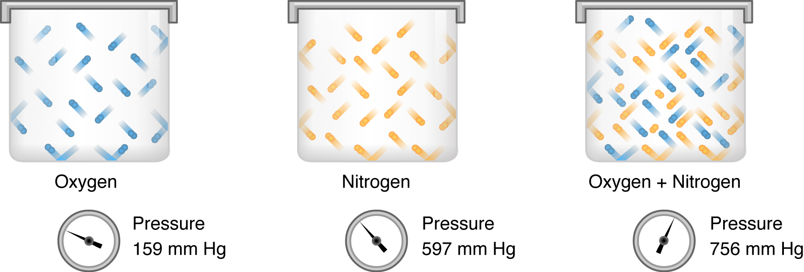
Partial pressure is extremely important in predicting the movement of gases. Recall that gases tend to equalize their pressure in two regions that are connected. A gas will move from an area where its partial pressure is higher to an area where its partial pressure is lower. In addition, the greater the partial pressure difference between the two areas, the more rapid is the movement of gases.
#### Solubility of Gases in Liquids
Henry’s lawdescribes the behavior of gases when they come into contact with a liquid, such as blood. Henry’s law states that the concentration of gas in a liquid is directly proportional to the solubility and partial pressure of that gas. The greater the partial pressure of the gas, the greater the number of gas molecules that will dissolve in the liquid. The concentration of the gas in a liquid is also dependent on the solubility of the gas in the liquid. For example, although nitrogen is present in the atmosphere, very little nitrogen dissolves into the blood, because the solubility of nitrogen in blood is very low. The exception to this occurs in scuba divers; the composition of the compressed air that divers breathe causes nitrogen to have a higher partial pressure than normal, causing it to dissolve in the blood in greater amounts than normal. Too much nitrogen in the bloodstream results in a serious condition that can be fatal if not corrected. Gas molecules establish an equilibrium between those molecules dissolved in liquid and those in air.
The composition of air in the atmosphere and in the alveoli differs. In both cases, the relative concentration of gases is nitrogen > oxygen > water vapor > carbon dioxide. The amount of water vapor present in alveolar air is greater than that in atmospheric air (Table \(\PageIndex{2}\)). Recall that the respiratory system works to humidify incoming air, thereby causing the air present in the alveoli to have a greater amount of water vapor than atmospheric air. In addition, alveolar air contains a greater amount of carbon dioxide and less oxygen than atmospheric air. This is no surprise, as gas exchange removes oxygen from and adds carbon dioxide to alveolar air. Both deep and forced breathing cause the alveolar air composition to be changed more rapidly than during quiet breathing. As a result, the partial pressures of oxygen and carbon dioxide change, affecting the diffusion process that moves these materials across the membrane. This will cause oxygen to enter and carbon dioxide to leave the blood more quickly.
| Gas | Percent of total composition | Partial pressure(mm Hg) |
|---|---|---|
| Nitrogen (N2) | 74.9 | 569 |
| Oxygen (O2) | 13.7 | 104 |
| Water (H2O) | 6.2 | 40 |
| Carbon dioxide (CO2) | 5.2 | 47 |
| Total composition/total alveolar pressure | 100% | 760.0 |
#### Ventilation and Perfusion
Two important aspects of gas exchange in the lung are ventilation and perfusion.Ventilationis the movement of air into and out of the lungs, and perfusion is the flow of blood in the pulmonary capillaries. For gas exchange to be efficient, the volumes involved in ventilation and perfusion should be compatible. However, factors such as regional gravity effects on blood, blocked alveolar ducts, or disease can cause ventilation and perfusion to be imbalanced.
The partial pressure of oxygen in alveolar air is about 104 mm Hg, whereas the partial pressure of oxygenated blood in pulmonary veins is about 100 mm Hg. When ventilation is sufficient, oxygen enters the alveoli at a high rate, and the partial pressure of oxygen in the alveoli remains high. In contrast, when ventilation is insufficient, the partial pressure of oxygen in the alveoli drops. Without the large difference in partial pressure between the alveoli and the blood, oxygen does not diffuse efficiently across the respiratory membrane. The body has mechanisms that counteract this problem. In cases when ventilation is not sufficient for an alveolus, the body redirects blood flow to alveoli that are receiving sufficient ventilation. This is achieved by constricting the pulmonary arterioles that serves the dysfunctional alveolus, which redirects blood to other alveoli that have sufficient ventilation. At the same time, the pulmonary arterioles that serve alveoli receiving sufficient ventilation vasodilate, which brings in greater blood flow. Factors such as carbon dioxide, oxygen, and pH levels can all serve as stimuli for adjusting blood flow in the capillary networks associated with the alveoli.
Ventilation is regulated by the diameter of the airways, whereas perfusion is regulated by the diameter of the blood vessels. The diameter of the bronchioles is sensitive to the partial pressure of carbon dioxide in the alveoli. A greater partial pressure of carbon dioxide in the alveoli causes the bronchioles to increase their diameter as will a decreased level of oxygen in the blood supply, allowing carbon dioxide to be exhaled from the body at a greater rate. As mentioned above, a greater partial pressure of oxygen in the alveoli causes the pulmonary arterioles to dilate, increasing blood flow.
Gas exchange occurs at two sites in the body: in the lungs, where oxygen is picked up and carbon dioxide is released at the respiratory membrane, and at the tissues, where oxygen is released and carbon dioxide is picked up. External respiration is the exchange of gases with the external environment, and occurs in the alveoli of the lungs. Internal respiration is the exchange of gases with the internal environment, and occurs in the tissues. The actual exchange of gases occurs due to simple diffusion. Energy is not required to move oxygen or carbon dioxide across membranes. Instead, these gases follow pressure gradients that allow them to diffuse. The anatomy of the lung maximizes the diffusion of gases: The respiratory membrane is highly permeable to gases; the respiratory and blood capillary membranes are very thin; and there is a large surface area throughout the lungs.
#### External Respiration
The pulmonary artery carries deoxygenated blood into the lungs from the heart, where it branches and eventually becomes the capillary network composed of pulmonary capillaries. These pulmonary capillaries create the respiratory membrane with the alveoli (Figure \(\PageIndex{2}\)). As the blood is pumped through this capillary network, gas exchange occurs. Although a small amount of the oxygen is able to dissolve directly into plasma from the alveoli, most of the oxygen is picked up by erythrocytes (red blood cells) and binds to a protein called hemoglobin, a process described later in this chapter. Oxygenated hemoglobin is red, causing the overall appearance of bright red oxygenated blood, which returns to the heart through the pulmonary veins. Carbon dioxide is released in the opposite direction of oxygen, from the blood to the alveoli. Some of the carbon dioxide is returned on hemoglobin, but can also be dissolved in plasma or is present as a converted form, also explained in greater detail later in this chapter.
External respirationoccurs as a function of partial pressure differences in oxygen and carbon dioxide between the alveoli and the blood in the pulmonary capillaries.
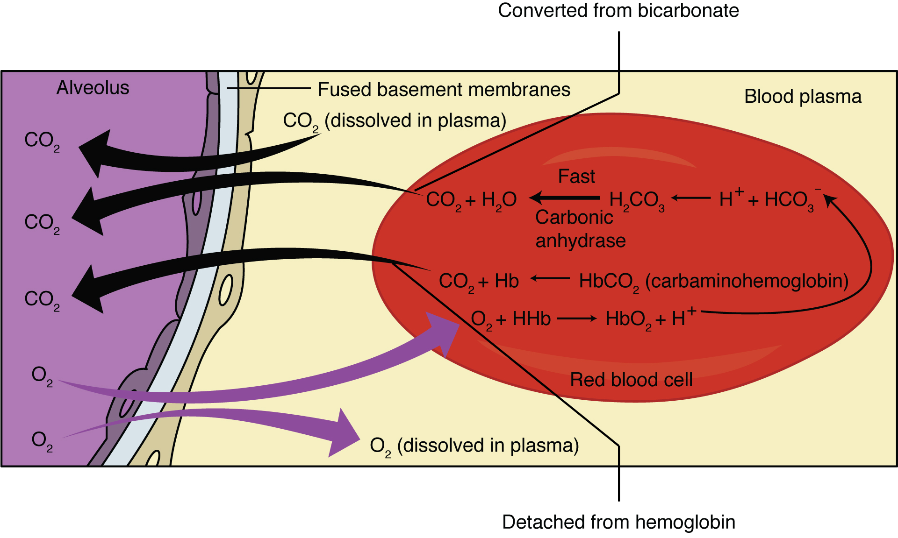
Although the solubility of oxygen in blood is not high, there is a drastic difference in the partial pressure of oxygen in the alveoli versus in the blood of the pulmonary capillaries. This difference is about 64 mm Hg: The partial pressure of oxygen in the alveoli is about 104 mm Hg, whereas its partial pressure in the blood of the capillary is about 40 mm Hg. This large difference in partial pressure creates a very strong pressure gradient that causes oxygen to rapidly cross the respiratory membrane from the alveoli into the blood.
The partial pressure of carbon dioxide is also different between the alveolar air and the blood of the capillary. However, the partial pressure difference is less than that of oxygen, about 5 mm Hg. The partial pressure of carbon dioxide in the blood of the capillary is about 45 mm Hg, whereas its partial pressure in the alveoli is about 40 mm Hg. However, the solubility of carbon dioxide is much greater than that of oxygen—by a factor of about 20—in both blood and alveolar fluids. As a result, the relative concentrations of oxygen and carbon dioxide that diffuse across the respiratory membrane are similar.
#### Internal Respiration
Internal respirationis gas exchange that occurs at the level of body tissues (Figure \(\PageIndex{3}\)). Similar to external respiration, internal respiration also occurs as simple diffusion due to a partial pressure gradient. However, the partial pressure gradients are opposite of those present at the respiratory membrane. The partial pressure of oxygen in tissues is low, about 40 mm Hg, because oxygen is continuously used for cellular respiration. In contrast, the partial pressure of oxygen in the blood is about 100 mm Hg. This creates a pressure gradient that causes oxygen to dissociate from hemoglobin, diffuse out of the blood, cross the interstitial space, and enter the tissue. Hemoglobin that has little oxygen bound to it loses much of its brightness, so that blood returning to the heart is more burgundy in color.
Considering that cellular respiration continuously produces carbon dioxide, the partial pressure of carbon dioxide is lower in the blood than it is in the tissue, causing carbon dioxide to diffuse out of the tissue, cross the interstitial fluid, and enter the blood. It is then carried back to the lungs either bound to hemoglobin, dissolved in plasma, or in a converted form. By the time blood returns to the heart, the partial pressure of oxygen has returned to about 40 mm Hg, and the partial pressure of carbon dioxide has returned to about 45 mm Hg. The blood is then pumped back to the lungs to be oxygenated once again during external respiration.
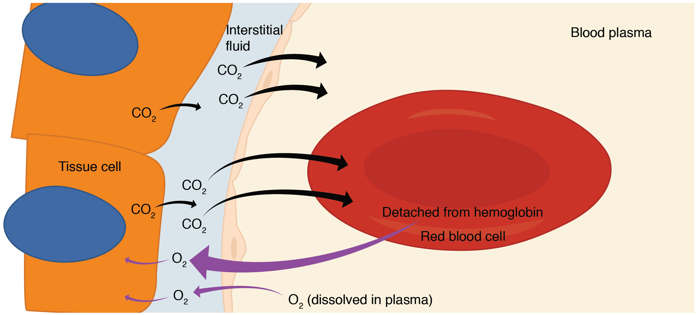
#### Hyperbaric Chamber Treatment
A type of device used in some areas of medicine that exploits the behavior of gases is hyperbaric chamber treatment. A hyperbaric chamber is a unit that can be sealed and expose a patient to either 100 percent oxygen with increased pressure or a mixture of gases that includes a higher concentration of oxygen than normal atmospheric air, also at a higher partial pressure than the atmosphere. There are two major types of chambers: monoplace and multiplace. Monoplace chambers are typically for one patient, and the staff tending to the patient observes the patient from outside of the chamber (Figure 22.24). Some facilities have special monoplace hyperbaric chambers that allow multiple patients to be treated at once, usually in a sitting or reclining position, to help ease feelings of isolation or claustrophobia. Multiplace chambers are large enough for multiple patients to be treated at one time, and the staff attending these patients is present inside the chamber. In a multiplace chamber, patients are often treated with air via a mask or hood, and the chamber is pressurized.

Hyperbaric chamber treatment is based on the behavior of gases. As you recall, gases move from a region of higher partial pressure to a region of lower partial pressure. In a hyperbaric chamber, the atmospheric pressure is increased, causing a greater amount of oxygen than normal to diffuse into the bloodstream of the patient. Hyperbaric chamber therapy is used to treat a variety of medical problems, such as wound and graft healing, anaerobic bacterial infections, and carbon monoxide poisoning. Exposure to and poisoning by carbon monoxide is difficult to reverse, because hemoglobin’s affinity for carbon monoxide is much stronger than its affinity for oxygen, causing carbon monoxide to replace oxygen in the blood. Hyperbaric chamber therapy can treat carbon monoxide poisoning, because the increased atmospheric pressure causes more oxygen to diffuse into the bloodstream. At this increased pressure and increased concentration of oxygen, carbon monoxide is displaced from hemoglobin. Another example is the treatment of anaerobic bacterial infections, which are created by bacteria that cannot or prefer not to live in the presence of oxygen. An increase in blood and tissue levels of oxygen helps to kill the anaerobic bacteria that are responsible for the infection, as oxygen is toxic to anaerobic bacteria. For wounds and grafts, the chamber stimulates the healing process by increasing energy production needed for repair. Increasing oxygen transport allows cells to ramp up cellular respiration and thus ATP production, the energy needed to build new structures.
📖 OpenStax Anatomy & Physiology 2e, Section 22.5. openstax.org · CC BY 4.0
- Describe the principles of oxygen transport
- Describe the structure of hemoglobin
- Compare and contrast fetal and adult hemoglobin
- Describe the principles of carbon dioxide transport
The other major activity in the lungs is the process of respiration, the process of gas exchange. The function of respiration is to provide oxygen for use by body cells during cellular respiration and to eliminate carbon dioxide, a waste product of cellular respiration, from the body. In order for the exchange of oxygen and carbon dioxide to occur, both gases must be transported between the external and internal respiration sites. Although carbon dioxide is more soluble than oxygen in blood, both gases require a specialized transport system for the majority of the gas molecules to be moved between the lungs and other tissues.
Even though oxygen is transported via the blood, you may recall that oxygen is not very soluble in liquids. A small amount of oxygen does dissolve in the blood and is transported in the bloodstream, but it is only about 1.5% of the total amount. The majority of oxygen molecules are carried from the lungs to the body’s tissues by a specialized transport system, which relies on the erythrocyte—the red blood cell. Erythrocytes contain a metalloprotein, hemoglobin, which serves to bind oxygen molecules to the erythrocyte (Figure \(\PageIndex{1}\)). Heme is the portion of hemoglobin that contains iron, and it is heme that binds oxygen. Each hemoglobin molecule contains four iron-containing heme molecules, and because of this, one hemoglobin molecule is capable of carrying up to four molecules of oxygen. As oxygen diffuses across the respiratory membrane from the alveolus to the capillary, it also diffuses into the red blood cell and is bound by hemoglobin. The following reversible chemical reaction describes the production of the final product,oxyhemoglobin(HbO2), which is formed when oxygen binds to hemoglobin. Oxyhemoglobin is a bright red-colored molecule that contributes to the bright red color of oxygenated blood.
\[Hb + O_{2} \leftrightarrow HbO_{2} \]
In this formula, Hb represents reduced hemoglobin, that is, hemoglobin that does not have oxygen bound to it. There are multiple factors involved in how readily heme binds to and dissociates from oxygen, which will be discussed in the subsequent sections.
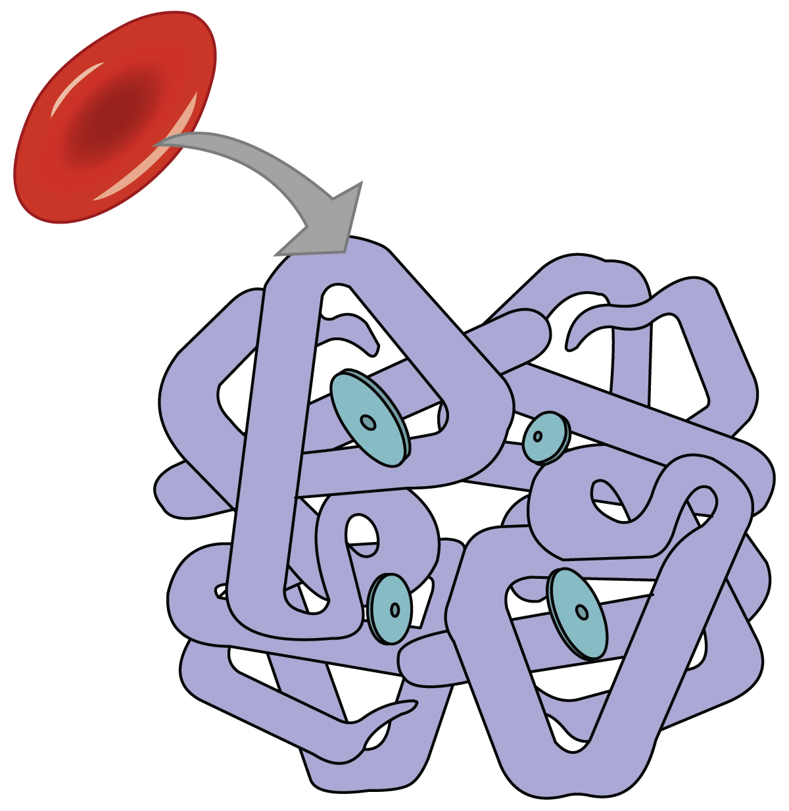
#### Function of Hemoglobin
Hemoglobin is composed of subunits, a protein structure that is referred to as a quaternary structure. Each of the four subunits that make up hemoglobin is arranged in a ring-like fashion, with an iron atom covalently bound to the heme in the center of each subunit. Binding of the first oxygen molecule causes a conformational change in hemoglobin that allows the second molecule of oxygen to bind more readily. As each molecule of oxygen is bound, it further facilitates the binding of the next molecule, until all four heme sites are occupied by oxygen. The opposite occurs as well: After the first oxygen molecule dissociates and is “dropped off” at the tissues, the next oxygen molecule dissociates more readily. When all four heme sites are occupied, the hemoglobin is said to be saturated. When one to three heme sites are occupied, the hemoglobin is said to be partially saturated. Therefore, when considering the blood as a whole, the percent of the available heme units that are bound to oxygen at a given time is called hemoglobin saturation. Hemoglobin saturation of 100 percent means that every heme unit in all of the erythrocytes of the body is bound to oxygen. In a healthy individual with normal hemoglobin levels, hemoglobin saturation generally ranges from 95 percent to 99 percent.
#### Oxygen Dissociation from Hemoglobin
Partial pressure is an important aspect of the binding of oxygen to and disassociation from heme. Anoxygen–hemoglobin dissociation curveis a graph that describes the relationship of partial pressure to the binding of oxygen to heme and its subsequent dissociation from heme (Figure \(\PageIndex{2}\)). Remember that gases travel from an area of higher partial pressure to an area of lower partial pressure. In addition, the affinity of an oxygen molecule for heme increases as more oxygen molecules are bound. Therefore, in the oxygen–hemoglobin saturation curve, as the partial pressure of oxygen increases, a proportionately greater number of oxygen molecules are bound by heme. Not surprisingly, the oxygen–hemoglobin saturation/dissociation curve also shows that the lower the partial pressure of oxygen, the fewer oxygen molecules are bound to heme. As a result, the partial pressure of oxygen plays a major role in determining the degree of binding of oxygen to heme at the site of the respiratory membrane, as well as the degree of dissociation of oxygen from heme at the site of body tissues.
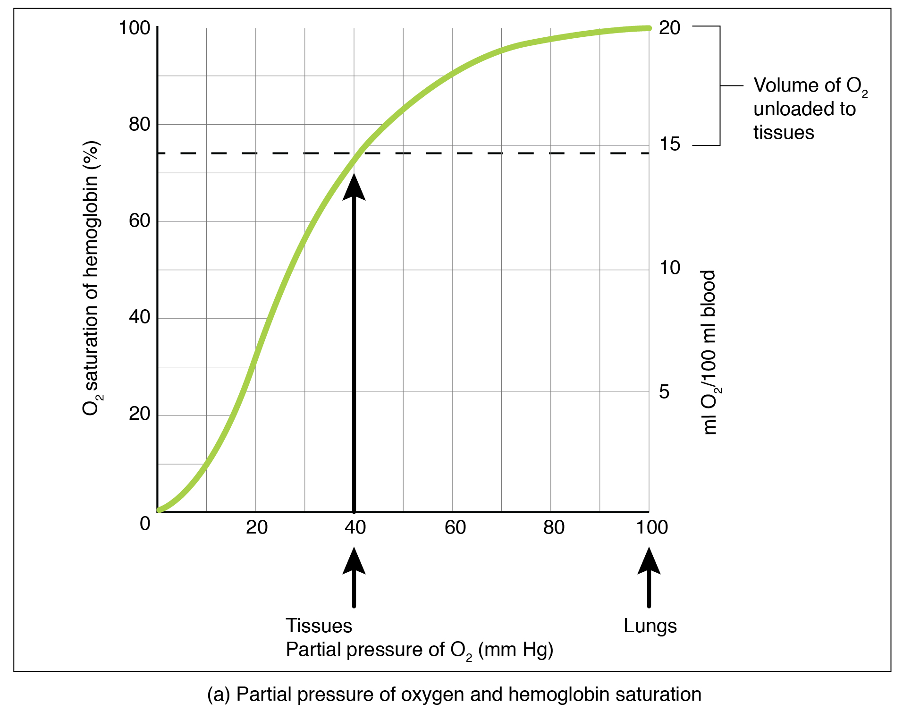
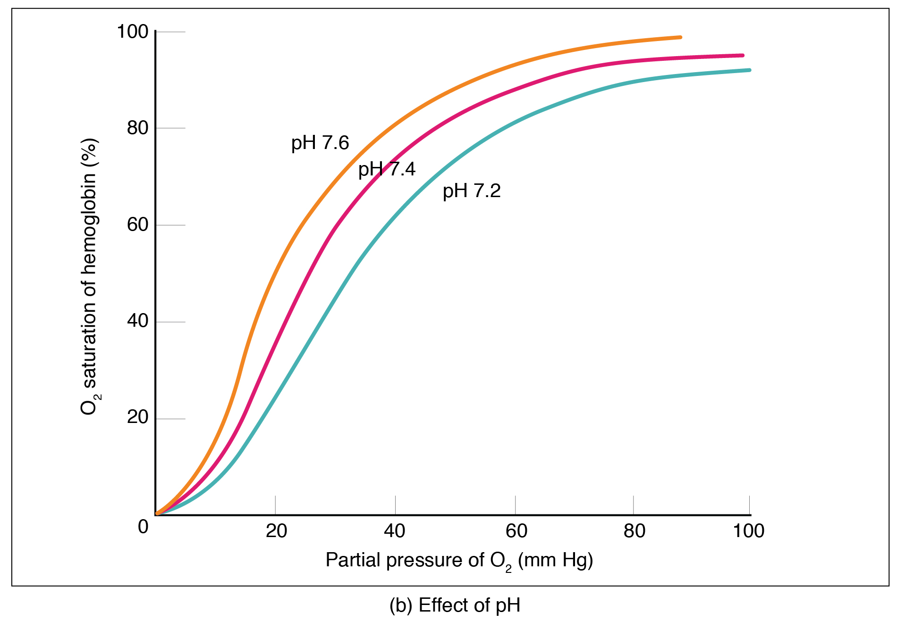
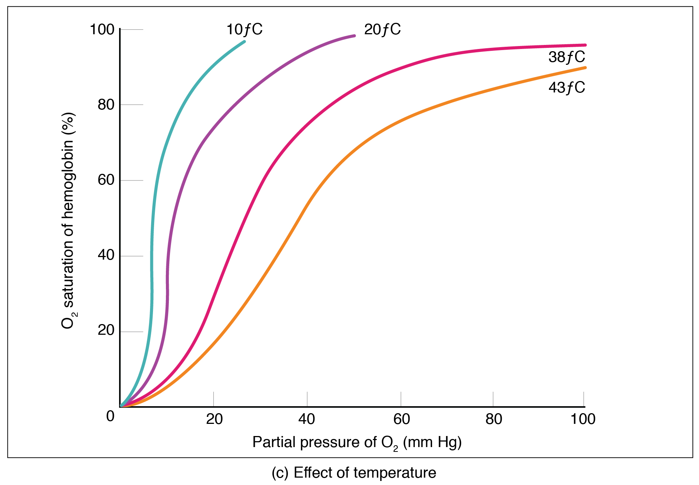
The mechanisms behind the oxygen–hemoglobin saturation/dissociation curve also serve as automatic control mechanisms that regulate how much oxygen is delivered to different tissues throughout the body. This is important because some tissues have a higher metabolic rate than others. Highly active tissues, such as muscle, rapidly use oxygen to produce ATP, lowering the partial pressure of oxygen in the tissue to about 20 mm Hg. The partial pressure of oxygen inside capillaries is about 100 mm Hg, so the difference between the two becomes quite high, about 80 mm Hg. As a result, a greater number of oxygen molecules dissociate from hemoglobin and enter the tissues. The reverse is true of tissues, such as adipose (body fat), which have lower metabolic rates. Because less oxygen is used by these cells, the partial pressure of oxygen within such tissues remains relatively high, resulting in fewer oxygen molecules dissociating from hemoglobin and entering the tissue interstitial fluid. Although venous blood is said to be deoxygenated, some oxygen is still bound to hemoglobin in its red blood cells. This provides an oxygen reserve that can be used when tissues suddenly demand more oxygen.
Factors other than partial pressure also affect the oxygen–hemoglobin saturation/dissociation curve. For example, a higher temperature promotes hemoglobin and oxygen to dissociate faster, whereas a lower temperature inhibits dissociation (see Figure \(\PageIndex{2}\), middle). However, the human body tightly regulates temperature, so this factor may not affect gas exchange throughout the body. The exception to this is in highly active tissues, which may release a larger amount of energy than is given off as heat. As a result, oxygen readily dissociates from hemoglobin, which is a mechanism that helps to provide active tissues with more oxygen.
Certain hormones, such as androgens, epinephrine, thyroid hormones, and growth hormone, can affect the oxygen–hemoglobin saturation/disassociation curve by stimulating the production of a compound called 2,3-bisphosphoglycerate (BPG) by erythrocytes. BPG is a byproduct of glycolysis. Because erythrocytes do not contain mitochondria, glycolysis is the sole method by which these cells produce ATP. BPG promotes the disassociation of oxygen from hemoglobin. Therefore, the greater the concentration of BPG, the more readily oxygen dissociates from hemoglobin, despite its partial pressure.
The pH of the blood is another factor that influences the oxygen–hemoglobin saturation/dissociation curve (see Figure \(\PageIndex{2}\)). TheBohr effectis a phenomenon that arises from the relationship between pH and oxygen’s affinity for hemoglobin: A lower, more acidic pH promotes oxygen dissociation from hemoglobin. In contrast, a higher, or more basic, pH inhibits oxygen dissociation from hemoglobin. The greater the amount of carbon dioxide in the blood, the more molecules that must be converted, which in turn generates hydrogen ions and thus lowers blood pH. Furthermore, blood pH may become more acidic when certain byproducts of cell metabolism, such as lactic acid, carbonic acid, and carbon dioxide, are released into the bloodstream.
#### Hemoglobin of the Fetus
The fetus has its own circulation with its own erythrocytes; however, it is dependent on the pregnant person for oxygen. Blood is supplied to the fetus by way of the umbilical cord, which is connected to the placenta and separated from maternal blood by the chorion. The mechanism of gas exchange at the chorion is similar to gas exchange at the respiratory membrane. However, the partial pressure of oxygen is lower in the maternal blood in the placenta, at about 35 to 50 mm Hg, than it is in maternal arterial blood. The difference in partial pressures between maternal and fetal blood is not large, as the partial pressure of oxygen in fetal blood at the placenta is about 20 mm Hg. Therefore, there is not as much diffusion of oxygen into the fetal blood supply. The fetus’ hemoglobin overcomes this problem by having a greater affinity for oxygen than maternal hemoglobin (Figure \(\PageIndex{3}\)). Both fetal and adult hemoglobin have four subunits, but two of the subunits of fetal hemoglobin have a different structure that causes fetal hemoglobin to have a greater affinity for oxygen than does adult hemoglobin.
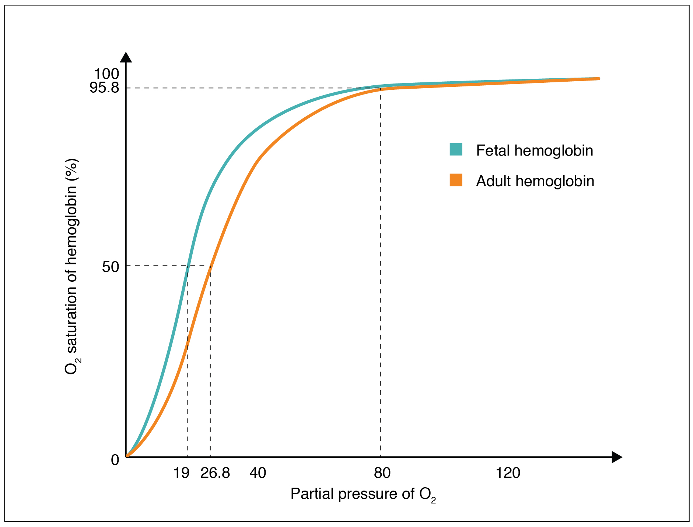
Carbon dioxide is transported by three major mechanisms. The first mechanism of carbon dioxide transport is by blood plasma, as some carbon dioxide molecules dissolve in the blood. The second mechanism is transport in the form of bicarbonate (HCO3–), which also dissolves in plasma. The third mechanism of carbon dioxide transport is similar to the transport of oxygen by erythrocytes (Figure \(\PageIndex{4}\)).
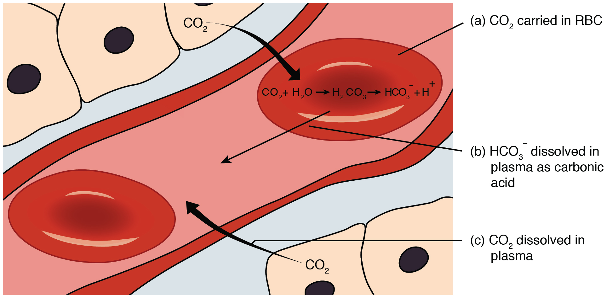
#### Dissolved Carbon Dioxide
Although carbon dioxide is not considered to be highly soluble in blood, a small fraction—about 7 to 10 percent—of the carbon dioxide that diffuses into the blood from the tissues dissolves in plasma. The dissolved carbon dioxide then travels in the bloodstream and when the blood reaches the pulmonary capillaries, the dissolved carbon dioxide diffuses across the respiratory membrane into the alveoli, where it is then exhaled during pulmonary ventilation.
#### Bicarbonate Buffer
A large fraction—about 70 percent—of the carbon dioxide molecules that diffuse into the blood is transported to the lungs as bicarbonate. Most bicarbonate is produced in erythrocytes after carbon dioxide diffuses into the capillaries, and subsequently into red blood cells.Carbonic anhydrase (CA)causes carbon dioxide and water to form carbonic acid (H2CO3), which dissociates into two ions: bicarbonate (HCO3–) and hydrogen (H+). The following formula depicts this reaction:
[CO_{2}+H_{2}O \overset{CA}{\leftrightarrow} H_{2}CO_{3}\leftrightarrow H^{+}+CO^{_{3}^{-}}\]
Bicarbonate tends to build up in the erythrocytes, so that there is a greater concentration of bicarbonate in the erythrocytes than in the surrounding blood plasma. As a result, some of the bicarbonate will leave the erythrocytes and move down its concentration gradient into the plasma in exchange for chloride (Cl–) ions. This phenomenon is referred to as thechloride shiftand occurs because by exchanging one negative ion for another negative ion, neither the electrical charge of the erythrocytes nor that of the blood is altered.
At the pulmonary capillaries, the chemical reaction that produced bicarbonate (shown above) is reversed, and carbon dioxide and water are the products. Much of the bicarbonate in the plasma re-enters the erythrocytes in exchange for chloride ions. Hydrogen ions and bicarbonate ions join to form carbonic acid, which is converted into carbon dioxide and water by carbonic anhydrase. Carbon dioxide diffuses out of the erythrocytes and into the plasma, where it can further diffuse across the respiratory membrane into the alveoli to be exhaled during pulmonary ventilation.
#### Carbaminohemoglobin
About 20 percent of carbon dioxide is bound by hemoglobin and is transported to the lungs. Carbon dioxide does not bind to iron as oxygen does; instead, carbon dioxide binds amino acid moieties on the globin portions of hemoglobin to formcarbaminohemoglobin, which forms when hemoglobin and carbon dioxide bind. When hemoglobin is not transporting oxygen, it tends to have a bluish-purple tone to it, creating the darker maroon color typical of deoxygenated blood. The following formula depicts this reversible reaction:
\[CO_{2}+ Hb\leftrightarrow HbCO_{2} \]
Similar to the transport of oxygen by heme, the binding and dissociation of carbon dioxide to and from hemoglobin is dependent on the partial pressure of carbon dioxide. Because carbon dioxide is released from the lungs, blood that leaves the lungs and reaches body tissues has a lower partial pressure of carbon dioxide than is found in the tissues. As a result, carbon dioxide leaves the tissues because of its higher partial pressure, enters the blood, and then moves into red blood cells, binding to hemoglobin. In contrast, in the pulmonary capillaries, the partial pressure of carbon dioxide is high compared to within the alveoli. As a result, carbon dioxide dissociates readily from hemoglobin and diffuses across the respiratory membrane into the air.
In addition to the partial pressure of carbon dioxide, the oxygen saturation of hemoglobin and the partial pressure of oxygen in the blood also influence the affinity of hemoglobin for carbon dioxide. TheHaldane effectis a phenomenon that arises from the relationship between the partial pressure of oxygen and the affinity of hemoglobin for carbon dioxide. Hemoglobin that is saturated with oxygen does not readily bind carbon dioxide. However, when oxygen is not bound to heme and the partial pressure of oxygen is low, hemoglobin readily binds to carbon dioxide.
Watch this video to see the transport of oxygen from the lungs to the tissues. Why is oxygenated blood bright red, whereas deoxygenated blood tends to be more of a purple color?
📖 OpenStax Anatomy & Physiology 2e, Section 22.6. openstax.org · CC BY 4.0
- Define the terms hyperpnea and hyperventilation
- Describe the effect of exercise on the respiratory system
- Describe the effect of high altitude on the respiratory system
- Discuss the process of acclimatization
At rest, the respiratory system performs its functions at a constant, rhythmic pace, as regulated by the respiratory centers of the brain. At this pace, ventilation provides sufficient oxygen to all the tissues of the body. However, there are times that the respiratory system must alter the pace of its functions in order to accommodate the oxygen demands of the body.
Hyperpneais an increased depth and rate of ventilation to meet an increase in oxygen demand as might be seen in exercise or disease, particularly diseases that target the respiratory or digestive tracts. This does not significantly alter blood oxygen or carbon dioxide levels, but merely increases the depth and rate of ventilation to meet the demand of the cells. In contrast,hyperventilationis an increased ventilation rate that is independent of the cellular oxygen needs and leads to abnormally low blood carbon dioxide levels and high (alkaline) blood pH.
Interestingly, exercise does not cause hyperpnea as one might think. Muscles that perform work during exercise do increase their demand for oxygen, stimulating an increase in ventilation. However, hyperpnea during exercise appears to occur before a drop in oxygen levels within the muscles can occur. Therefore, hyperpnea must be driven by other mechanisms, either instead of or in addition to a drop in oxygen levels. The exact mechanisms behind exercise hyperpnea are not well understood, and some hypotheses are somewhat controversial. However, in addition to low oxygen, high carbon dioxide, and low pH levels, there appears to be a complex interplay of factors related to the nervous system and the respiratory centers of the brain.
First, a conscious decision to partake in exercise, or another form of physical exertion, results in a psychological stimulus that may trigger the respiratory centers of the brain to increase ventilation. In addition, the respiratory centers of the brain may be stimulated through the activation of motor neurons that innervate muscle groups that are involved in the physical activity. Finally, physical exertion stimulates proprioceptors, which are receptors located within the muscles, joints, and tendons, which sense movement and stretching; proprioceptors thus create a stimulus that may also trigger the respiratory centers of the brain. These neural factors are consistent with the sudden increase in ventilation that is observed immediately as exercise begins. Because the respiratory centers are stimulated by psychological, motor neuron, and proprioceptor inputs throughout exercise, the fact that there is also a sudden decrease in ventilation immediately after the exercise ends when these neural stimuli cease, further supports the idea that they are involved in triggering the changes of ventilation.
An increase in altitude results in a decrease in atmospheric pressure. Although the proportion of oxygen relative to gases in the atmosphere remains at 21 percent, its partial pressure decreases (Table \(\PageIndex{1}\)). As a result, it is more difficult for a body to achieve the same level of oxygen saturation at high altitude than at low altitude, due to lower atmospheric pressure. In fact, hemoglobin saturation is lower at high altitudes compared to hemoglobin saturation at sea level. For example, hemoglobin saturation is about 67 percent at 19,000 feet above sea level, whereas it reaches about 98 percent at sea level.
| Example location | Altitude (feet above sea level) | Atmospheric pressure (mm Hg) | Partial pressure of oxygen (mm Hg) |
|---|---|---|---|
| New York City, New York | 0 | 760 | 159 |
| Boulder, Colorado | 5000 | 632 | 133 |
| Aspen, Colorado | 8000 | 565 | 118 |
| Pike’s Peak, Colorado | 14,000 | 447 | 94 |
| Denali (Mt. McKinley), Alaska | 20,000 | 350 | 73 |
| Mt. Everes |
As you recall, partial pressure is extremely important in determining how much gas can cross the respiratory membrane and enter the blood of the pulmonary capillaries. A lower partial pressure of oxygen means that there is a smaller difference in partial pressures between the alveoli and the blood, so less oxygen crosses the respiratory membrane. As a result, fewer oxygen molecules are bound by hemoglobin. Despite this, the tissues of the body still receive a sufficient amount of oxygen during rest at high altitudes. This is due to two major mechanisms. First, the number of oxygen molecules that enter the tissue from the blood is nearly equal between sea level and high altitudes. At sea level, hemoglobin saturation is higher, but only a quarter of the oxygen molecules are actually released into the tissue. At high altitudes, a greater proportion of molecules of oxygen are released into the tissues. Secondly, at high altitudes, a greater amount of BPG is produced by erythrocytes, which enhances the dissociation of oxygen from hemoglobin. Physical exertion, such as skiing or hiking, can lead to altitude sickness due to the low amount of oxygen reserves in the blood at high altitudes. At sea level, there is a large amount of oxygen reserve in venous blood (even though venous blood is thought of as “deoxygenated”) from which the muscles can draw during physical exertion. Because the oxygen saturation is much lower at higher altitudes, this venous reserve is small, resulting in pathological symptoms of low blood oxygen levels. You may have heard that it is important to drink more water when traveling at higher altitudes than you are accustomed to. This is because your body will increase micturition (urination) at high altitudes to counteract the effects of lower oxygen levels. By removing fluids, blood plasma levels drop but not the total number of erythrocytes. In this way, the overall concentration of erythrocytes in the blood increases, which helps tissues obtain the oxygen they need.
Acute mountain sickness (AMS), or altitude sickness, is a condition that results from acute exposure to high altitudes due to a low partial pressure of oxygen at high altitudes. AMS typically can occur at 2400 meters (8000 feet) above sea level. AMS is a result of low blood oxygen levels, as the body has acute difficulty adjusting to the low partial pressure of oxygen. In serious cases, AMS can cause pulmonary or cerebral edema. Symptoms of AMS include nausea, vomiting, fatigue, lightheadedness, drowsiness, feeling disoriented, increased pulse, and nosebleeds. The only treatment for AMS is descending to a lower altitude; however, pharmacologic treatments and supplemental oxygen can improve symptoms. AMS can be prevented by slowly ascending to the desired altitude, allowing the body to acclimate, as well as maintaining proper hydration.
Especially in situations where the ascent occurs too quickly, traveling to areas of high altitude can cause AMS.Acclimatizationis the process of adjustment that the respiratory system makes due to chronic exposure to a high altitude. Over a period of time, the body adjusts to accommodate the lower partial pressure of oxygen. The low partial pressure of oxygen at high altitudes results in a lower oxygen saturation level of hemoglobin in the blood. In turn, the tissue levels of oxygen are also lower. As a result, the kidneys are stimulated to produce the hormone erythropoietin (EPO), which stimulates the production of erythrocytes, resulting in a greater number of circulating erythrocytes in an individual at a high altitude over a long period. With more red blood cells, there is more hemoglobin to help transport the available oxygen. Even though there is low saturation of each hemoglobin molecule, there will be more hemoglobin present, and therefore more oxygen in the blood. Over time, this allows the person to partake in physical exertion without developing AMS.
📖 OpenStax Anatomy & Physiology 2e, Section 22.7. openstax.org · CC BY 4.0
- Create a timeline of the phases of respiratory development in the fetus
- Propose reasons for fetal breathing movements
- Explain how the lungs become inflated after birth
Development of the respiratory system begins early in the fetus. It is a complex process that includes many structures, most of which arise from the endoderm. Towards the end of development, the fetus can be observed making breathing movements. Until birth, however, the pregnant person provides all of the oxygen to the fetus as well as removes all of the fetal carbon dioxide via the placenta.
The development of the respiratory system begins at about week 4 of gestation. By week 28, enough alveoli have matured that a baby born prematurely at this time can usually breathe on its own. The respiratory system, however, is not fully developed until early childhood, when a full complement of mature alveoli is present.
Respiratory development in the embryo begins around week 4. Ectodermal tissue from the anterior head region invaginates posteriorly to form olfactory pits, which fuse with endodermal tissue of the developing pharynx. Anolfactory pitis one of a pair of structures that will enlarge to become the nasal cavity. At about this same time, the lung bud forms. Thelung budis a dome-shaped structure composed of tissue that bulges from the foregut. Theforegutis endoderm just inferior to the pharyngeal pouches. Thelaryngotracheal budis a structure that forms from the longitudinal extension of the lung bud as development progresses. The portion of this structure nearest the pharynx becomes the trachea, whereas the distal end becomes more bulbous, forming bronchial buds. Abronchial budis one of a pair of structures that will eventually become the bronchi and all other lower respiratory structures (Figure \(\PageIndex{1}\)).
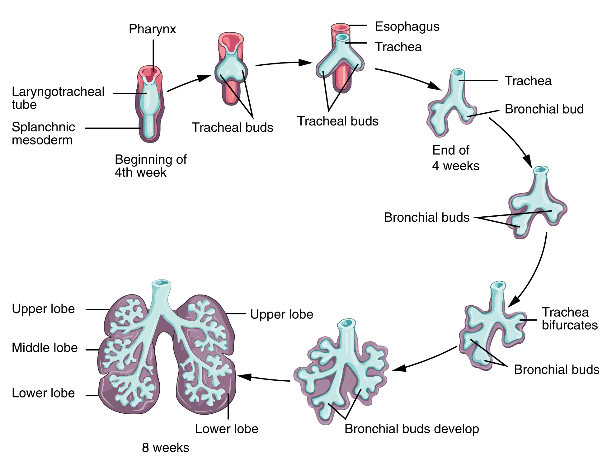
Bronchial buds continue to branch as development progresses until all of the segmental bronchi have been formed. Beginning around week 13, the lumens of the bronchi begin to expand in diameter. By week 16, respiratory bronchioles form. The fetus now has all major lung structures involved in the airway.
Once the respiratory bronchioles form, further development includes extensive vascularization, or the development of the blood vessels, as well as the formation of alveolar ducts and alveolar precursors. At about week 19, the respiratory bronchioles have formed. In addition, cells lining the respiratory structures begin to differentiate to form type I and type II pneumocytes. Once type II cells have differentiated, they begin to secrete small amounts of pulmonary surfactant. Around week 20, fetal breathing movements may begin.
Major growth and maturation of the respiratory system occurs from week 24 until term. More alveolar precursors develop, and larger amounts of pulmonary surfactant are produced. Surfactant levels are not generally adequate to create effective lung compliance until about the eighth month of pregnancy. The respiratory system continues to expand, and the surfaces that will form the respiratory membrane develop further. At this point, pulmonary capillaries have formed and continue to expand, creating a large surface area for gas exchange. The major milestone of respiratory development occurs at around week 28, when sufficient alveolar precursors have matured so that a baby born prematurely at this time can usually breathe on its own. However, alveoli continue to develop and mature into childhood. A full complement of functional alveoli does not appear until around 8 years of age.
Although the function of fetal breathing movements is not entirely clear, they can be observed starting at 20–21 weeks of development. Fetal breathing movements involve muscle contractions that cause the inhalation of amniotic fluid and exhalation of the same fluid, with pulmonary surfactant and mucus. Fetal breathing movements are not continuous and may include periods of frequent movements and periods of no movements. Maternal factors can influence the frequency of breathing movements. For example, high blood glucose levels, called hyperglycemia, can boost the number of breathing movements. Conversely, low blood glucose levels, called hypoglycemia, can reduce the number of fetal breathing movements. Tobacco use is also known to lower fetal breathing rates. Fetal breathing may help tone the muscles in preparation for breathing movements once the fetus is born. It may also help the alveoli to form and mature. Fetal breathing movements are considered a sign of robust health.
Prior to birth, the lungs are filled with amniotic fluid, mucus, and surfactant. As the fetus is squeezed through the birth canal, the fetal thoracic cavity is compressed, expelling much of this fluid. Some fluid remains, however, but is rapidly absorbed by the body shortly after birth. The first inhalation occurs within 10 seconds after birth and not only serves as the first inspiration, but also acts to inflate the lungs. Pulmonary surfactant is critical for inflation to occur, as it reduces the surface tension of the alveoli. Preterm birth around 26 weeks frequently results in severe respiratory distress, although with current medical advancements, some babies may survive. Prior to 26 weeks, sufficient pulmonary surfactant is not produced, and the surfaces for gas exchange have not formed adequately; therefore, survival is low.
#### Respiratory System: Respiratory Distress Syndrome
Respiratory distress syndrome (RDS) primarily occurs in infants born prematurely. Up to 50 percent of infants born between 26 and 28 weeks and fewer than 30 percent of infants born between 30 and 31 weeks develop RDS. RDS results from insufficient production of pulmonary surfactant, thereby preventing the lungs from properly inflating at birth. A small amount of pulmonary surfactant is produced beginning at around 20 weeks; however, this is not sufficient for inflation of the lungs. As a result, dyspnea occurs and gas exchange cannot be performed properly. Blood oxygen levels are low, whereas blood carbon dioxide levels and pH are high.
The primary cause of RDS is premature birth, which may be due to a variety of known or unknown causes. Other risk factors include gestational diabetes, cesarean delivery, second-born twins, and family history of RDS. The presence of RDS can lead to other serious disorders, such as septicemia (infection of the blood) or pulmonary hemorrhage. Therefore, it is important that RDS is immediately recognized and treated to prevent death and reduce the risk of developing other disorders.
Medical advances have resulted in an improved ability to treat RDS and support the infant until proper lung development can occur. At the time of delivery, treatment may include resuscitation and intubation if the infant does not breathe on their own. These infants would need to be placed on a ventilator to mechanically assist with the breathing process. If spontaneous breathing occurs, application of nasal continuous positive airway pressure (CPAP) may be required. In addition, pulmonary surfactant is typically administered. Death due to RDS has been reduced by 50 percent due to the introduction of pulmonary surfactant therapy. Other therapies may include corticosteroids, supplemental oxygen, and assisted ventilation. Supportive therapies, such as temperature regulation, nutritional support, and antibiotics, may be administered to the premature infant as well.
📖 OpenStax Anatomy & Physiology 2e, Section 22.8. openstax.org · CC BY 4.0
| Section | Title |
|---|---|
| 22.2 | 22.2: Organs and Structures of the Respiratory System |
| 22.3 | 22.3: The Lungs |
| 22.4 | 22.4: The Process of Breathing |
| 22.5 | 22.5: Gas Exchange |
| 22.6 | 22.6: Transport of Gases |
| 22.7 | 22.7: Modifications in Respiratory Functions |
| 22.8 | 22.8: Embryonic Development of the Respiratory System |